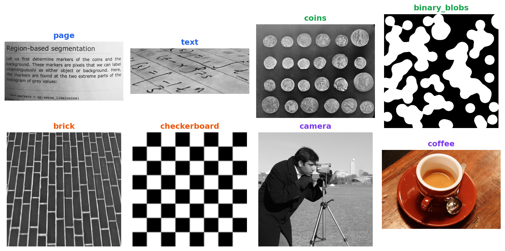
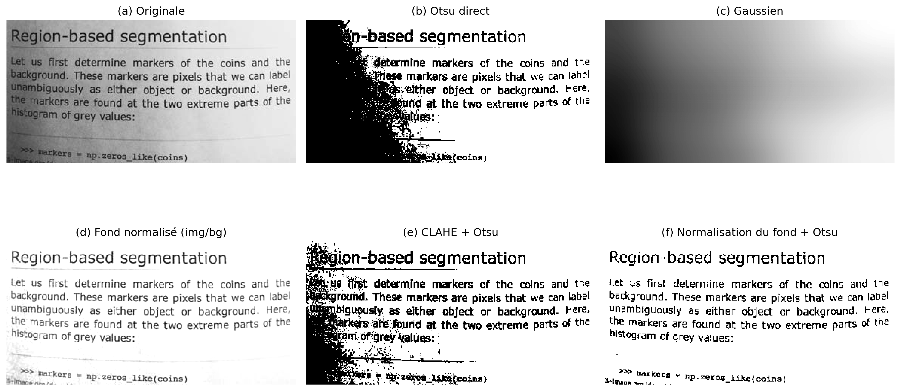
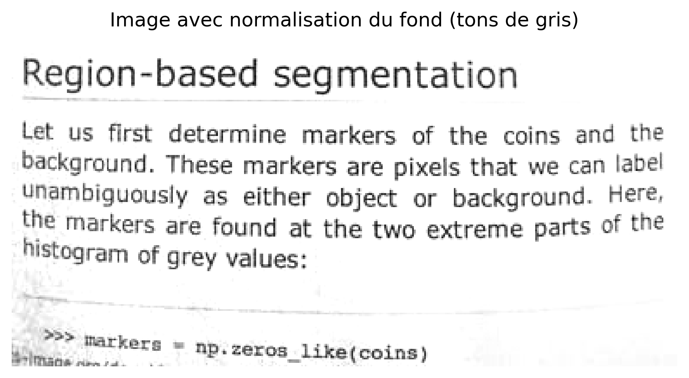
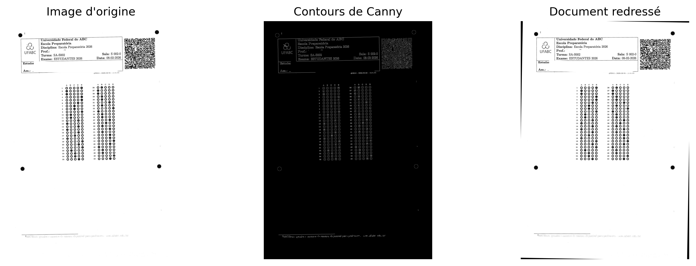
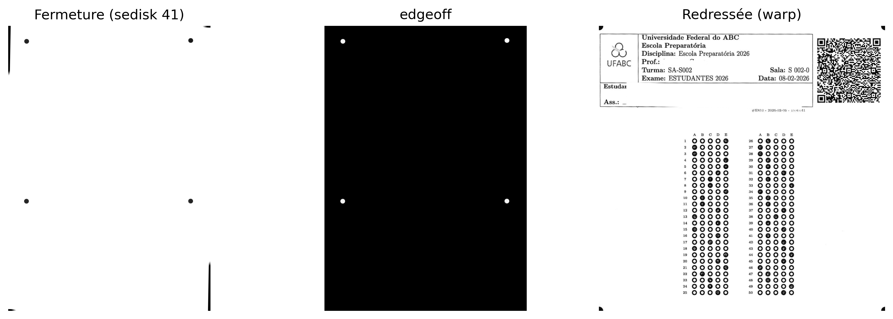
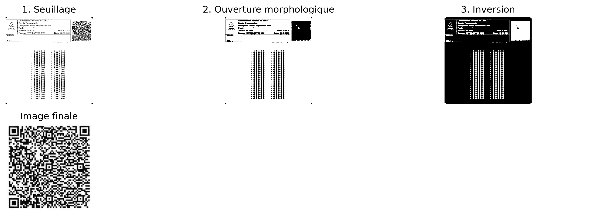
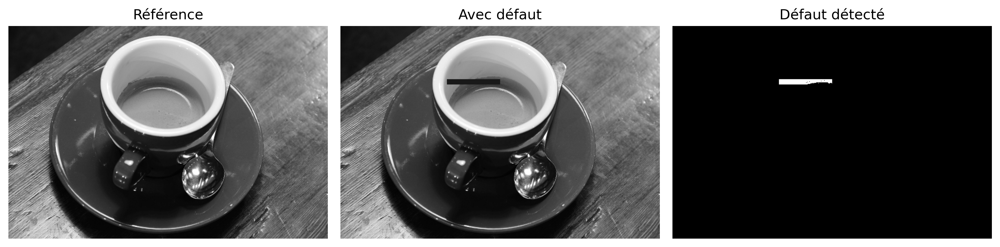
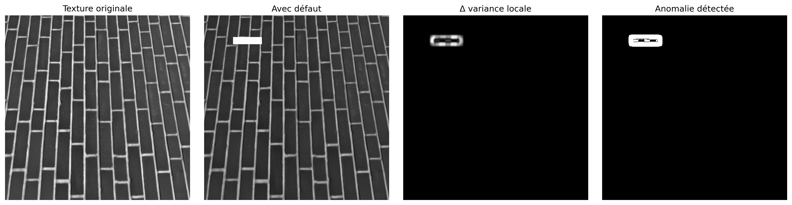

Dans la Partie I — Traitement numérique des images (TNI), ont été étudiées des techniques de transformation et d’amélioration des images, telles que les opérations morphologiques, le filtrage spatial, les convolutions, le seuillage, la segmentation et le traitement dans le domaine fréquentiel.
La Partie II — Vision par ordinateur (VO) élargit ce champ en abordant l’interprétation automatique du contenu visuel, impliquant l’extraction d’informations, la reconnaissance de formes et la prise de décisions à partir d’images.
Ce chapitre présente cette transition à travers deux applications représentatives :
Analyse automatisée de documents, appliquée au traitement de formulaires, d’évaluations et d’autres documents structurés au moyen de systèmes de reconnaissance optique de marques (Optical Mark Recognition – OMR) ;
Inspection industrielle automatisée, axée sur le contrôle qualité et la détection de défauts sur les chaînes de production.
Ces applications intègrent des techniques de détection de structures géométriques, d’extraction de descripteurs invariants, de reconnaissance de formes et de classification d’objets, constituant la base de nombreux systèmes modernes d’inspection visuelle et d’automatisation.
6.1 Objectifs du chapitre
À la fin de ce chapitre, l’étudiant devrait être capable de :
Évaluer l’influence du prétraitement sur la qualité de la reconnaissance automatique des informations dans les documents ;
Effectuer la reconnaissance optique de caractères (ROC) pour convertir des documents numérisés en texte codé ;
Appliquer des techniques de traitement du langage naturel, y compris la traduction automatique, au texte obtenu par ROC ;
Appliquer des techniques d’alignement et de rectification géométrique de documents utilisant la transformée de Hough et les transformations projectives ;
Implémenter des systèmes de reconnaissance optique de marques (ROM) pour la lecture automatisée d’évaluations et de formulaires ;
Détecter et segmenter des régions d’intérêt sur la base d’opérations morphologiques, de contours et de propriétés géométriques ;
Décoder des marqueurs bidimensionnels et des codes-barres, en intégrant des bibliothèques de vision par ordinateur aux pipelines de traitement documentaire ;
Développer des pipelines de vision par ordinateur pour l’analyse automatisée de documents.
Ce chapitre marque la transition du traitement numérique des images, axé sur la transformation des images, vers la vision par ordinateur, dont l’objectif est d’interpréter le contenu visuel, d’extraire des informations et de soutenir des processus automatisés d’analyse et de prise de décision.
6.2 Configuration de l’environnement
Les exemples de ce chapitre utilisent des bibliothèques largement employées en PDI-VC. Le bloc ci-dessous installe les paquets nécessaires ; dans les environnements qui les possèdent déjà, l’exécution peut être ignorée.
import os, urllib.requesturl ="https://raw.githubusercontent.com/fzampirolli/pdi-vc/master/morph/config.py"ifnot os.path.exists("config.py"): urllib.request.urlretrieve(url, "config.py")import configconfig.setup()from morph import mm# installer plus de dépendances en plus de morph.py pour ce chapitreimport sys, subprocess, importlib, shutildef setup_cap06():"""Installe les dépendances système et Python spécifiques au chapitre 6 (OCR, lecture de PDF, code-barres)."""# 1. Dépendances systèmeif'google.colab'in sys.modules:print("[ENVIRONNEMENT] Google Colab. Configuration des dépendances système...") subprocess.run("apt-get update && apt-get install -y poppler-utils ""libzbar0 tesseract-ocr tesseract-ocr-por", shell=True, stdout=subprocess.DEVNULL, stderr=subprocess.DEVNULL )elif shutil.which("tesseract") isNone:# Environnement local sans tesseract : tentative d'installation via apt-get (nécessite sudo/root)if shutil.which("apt-get"):print("[ENVIRONNEMENT] Local. Installation de tesseract-ocr via apt-get (peut demander un mot de passe)...") resultado = subprocess.run("sudo apt-get update && sudo apt-get install -y tesseract-ocr tesseract-ocr-por", shell=True )if resultado.returncode !=0or shutil.which("tesseract") isNone:print("[AVERTISSEMENT] Impossible d'installer automatiquement. ""Installez manuellement : sudo apt install tesseract-ocr tesseract-ocr-por" )else:print("[AVERTISSEMENT] tesseract introuvable et apt-get indisponible. ""Installez manuellement avant d'exécuter les cellules OCR." )# 2. Dépendances Python (installe uniquement celles manquantes) pkgs = {"cv2": "opencv-python", "skimage": "scikit-image", "numpy": "numpy","pdf2image": "pdf2image", "pandas": "pandas", "tabulate": "tabulate","PyPDF2": "PyPDF2", "bcrypt": "bcrypt", "pyarrow": "pyarrow","pyzbar": "pyzbar", "pytesseract": "pytesseract", "deep_translator": "deep-translator" }for mod, pkg in pkgs.items():if importlib.util.find_spec(mod) isNone: resultado_pip = subprocess.run([sys.executable, "-m", "pip", "install", "-q", pkg])if resultado_pip.returncode !=0:print(f"[AVERTISSEMENT] Échec de l'installation de {pkg} (nécessaire pour le module {mod}).")setup_cap06()# 3. Imports globaux du pipelineimport cv2, numpy as np, matplotlib.pyplot as pltfrom skimage import io, data, color
✅ Environnement prêt. Morph : 1.1.9 | OpenCV : 5.0.0
[ENVIRONNEMENT] Local. Installation de tesseract-ocr via apt-get (peut demander un mot de passe)...
[AVERTISSEMENT] Impossible d'installer automatiquement. Installez manuellement : sudo apt install tesseract-ocr tesseract-ocr-por
Outre ces bibliothèques, on utilisera le module didactique morph.py, développé pour simplifier les opérations de lecture, de visualisation et de traitement d’images tout au long de cet ouvrage. Le code suivant vérifie sa disponibilité, effectue le téléchargement si nécessaire et confirme la version chargée.
Les exemples présentés dans cette partie de l’ouvrage utilisent, chaque fois que possible, des documents numérisés, des feuilles de réponses, des codes-barres, des QRCodes et d’autres images provenant d’applications réelles. Afin de rendre les expériences entièrement reproductibles — y compris dans des environnements sans accès à Internet ou aux fichiers originaux du MCTest —, on emploie également des images publiques largement utilisées dans l’enseignement et la recherche en Traitement Numérique des Images et Vision par Ordinateur (TNI-VO).
AstucePourquoi utiliser une base d’images de benchmark ?
Des images comme camera() et coins() sont employées depuis des décennies dans les manuels, les articles scientifiques et les supports pédagogiques de TNI-VO. Leur utilisation offre d’importants avantages :
Reproductibilité : tout lecteur obtient exactement les mêmes images, quel que soit l’ordinateur ou le système d’exploitation utilisé, sans avoir besoin de téléchargements externes ni de fichiers spécifiques à cet ouvrage ;
Comparabilité : les résultats produits peuvent être directement comparés à ceux rapportés dans la littérature, puisque les mêmes ensembles d’images sont largement adoptés comme référence ;
Concentration sur les algorithmes : étant compactes, bien documentées et distribuées sans restrictions d’usage à des fins éducatives et scientifiques, ces images permettent de concentrer l’attention sur les techniques de traitement, en réduisant les interférences liées à l’acquisition ou à la gestion des données.
6.3.1 Images publiques avec skimage.data
Le module skimage.data fournit une collection d’images de référence largement utilisée dans les activités d’enseignement, de recherche et de validation d’algorithmes en TDI-VC. L’inspection de l’attribut data.__all__ montre que la version actuelle regroupe 42 éléments, incluant des photographies naturelles, des documents numérisés, des images médicales, de la microscopie, des textures, des motifs synthétiques, des modèles tridimensionnels et des séquences temporelles. Il convient de noter que certains de ces éléments correspondent à des fonctions utilitaires, comme data_dir() et download_all(), et non à des images à proprement parler.
Comme l’objectif de ce chapitre est de présenter des applications d’analyse documentaire et d’inspection visuelle, la Table 6.2 regroupe une sélection représentative des images les plus pertinentes, organisée selon leurs principales applications en Vision par Ordinateur. La Figure 6.1 présente un échantillon de ces images, groupées selon la même classification adoptée dans le tableau.
NoteImages utilisées dans ce chapitre
Bien que skimage.data fournisse des dizaines d’images de référence, seulement quatre sont employées directement dans les expériences de ce chapitre. Elles ont été sélectionnées car elles reproduisent, de manière contrôlée, des caractéristiques fréquemment rencontrées dans les documents numérisés et dans les systèmes d’inspection visuelle industrielle. La Table 6.1 résume le rôle de chacune d’elles au long de ce chapitre.
Table 6.1: Images de skimage.data utilisées dans les expériences de ce chapitre.
Image
Application dans le chapitre
data.page()
Page numérisée utilisée dans les expériences de correction d’éclairage, d’amélioration locale (CLAHE) et de seuillage automatique par Otsu.
data.text()
Document contenant du texte imprimé, employé pour illustrer la segmentation, l’extraction de contours et les étapes typiques de l’OCR et de l’OMR.
data.coffee()
Photographie en couleurs avec des variations naturelles d’éclairage, utilisée pour exemplifier des techniques applicables à des scènes réelles non documentaires.
data.brick()
Texture de référence employée dans des exemples d’inspection de surface et de détection de défauts par analyse de variance locale.
Table 6.2: Sélection d’images publiques représentatives disponibles dans le module skimage.data, organisées par domaine d’application.
Categoria
Função
Descrição
📄 Documentos & OCR/OMR
data.page()
Página digitalizada de documento — normalização de fundo, CLAHE e Otsu.
📄 Documentos & OCR/OMR
data.text()
Texto impresso — segmentação e extração de contornos em cenários de OCR/OMR.
🔵 Segmentação, Morfologia & Contornos
data.coins()
Conjunto de moedas — referência clássica para segmentação e watershed.
🔵 Segmentação, Morfologia & Contornos
data.clock()
Relógio analógico — detecção de formas e contornos.
🔵 Segmentação, Morfologia & Contornos
data.binary_blobs()
Blobs binários sintéticos — conectividade e morfologia matemática.
🔵 Segmentação, Morfologia & Contornos
data.moon()
Superfície lunar — segmentação de crateras por relevo de intensidade.
🧵 Textura & Inspeção Industrial
data.brick()
Textura uniforme de tijolos — detecção de defeitos por variância local.
🧵 Textura & Inspeção Industrial
data.checkerboard()
Padrão xadrez — calibração de câmera e transformações geométricas.
🖼️ Fotografias Clássicas de PDI/VC
data.camera()
Fotógrafo com tripé — imagem de referência mais citada na literatura de PDI.
🖼️ Fotografias Clássicas de PDI/VC
data.astronaut()
Retrato colorido de astronauta — filtragem e realce em cor.
🖼️ Fotografias Clássicas de PDI/VC
data.coffee()
Xícara de café — cena real com variação de iluminação e cor.
🖼️ Fotografias Clássicas de PDI/VC
data.cat() / data.chelsea()
Fotografias coloridas de gatos — detecção de bordas e realce.
🖼️ Fotografias Clássicas de PDI/VC
data.horse()
Silhueta binária de cavalo — descritores de forma e contorno.
import matplotlib.pyplot as pltfrom skimage import data# Images triées par catégorie ; la couleur du titre reproduit la couleur de la catégorie dans le tableau précédentimgs = [ ("page", data.page(), "#2563eb"), # Documents & OCR/OMR ("text", data.text(), "#2563eb"), ("coins", data.coins(), "#16a34a"), # Segmentation & morphologie ("binary_blobs", data.binary_blobs(), "#16a34a"), ("brick", data.brick(), "#ea580c"), # Texture & inspection industrielle ("checkerboard", data.checkerboard(),"#ea580c"), ("camera", data.camera(), "#7c3aed"), # Photographies classiques de TNI/Vision par ordinateur ("coffee", data.coffee(), "#7c3aed"),]fig, ax = plt.subplots(2, 4, figsize=(11, 5.5))for a, (nome, img, cor) inzip(ax.ravel(), imgs): a.imshow(img, cmap="gray") a.set_title(nome, color=cor, fontweight="bold") a.axis("off")plt.tight_layout()

Figure 6.1: Échantillon d’images publiques de skimage.data, groupées par domaine d’application.
6.4 Normalisation du fond et égalisation locale de contraste
La qualité de la segmentation dépend directement des caractéristiques de l’image d’entrée. Dans les documents numérisés, les variations d’éclairage, les ombres, les régions surexposées et les différences de tonalité du papier réduisent le contraste entre le premier plan et le fond, rendant difficile l’application de méthodes de seuillage global, comme l’algorithme d’Otsu.
Pour minimiser ces effets, deux techniques complémentaires de prétraitement sont employées :
Normalisation du fond : elle estime la composante basse fréquence de l’image au moyen d’un fort lissage, puis normalise l’image originale par rapport à ce fond estimé. Cette procédure réduit les gradients d’éclairage et compense les variations lentes d’intensité, tout en préservant les structures d’intérêt.
CLAHE (Contrast Limited Adaptive Histogram Equalization), présenté au Chapitre 4 : il divise l’image en petites régions (tiles) et procède à l’égalisation de l’histogramme de chaque région de manière indépendante. Le contraste est limité afin d’éviter l’amplification excessive du bruit, ce qui rend la technique particulièrement adaptée aux images présentant des variations locales d’éclairage.
La Figure 6.2 compare ces stratégies en utilisant l’image page() de la bibliothèque skimage.data. Six résultats sont présentés : (a) l’image originale ; (b) la binarisation directe par la méthode d’Otsu, utilisée comme référence ; (c) le fond estimé par filtrage gaussien ; (d) l’image après la normalisation du fond ; (e) la binarisation obtenue après application du CLAHE suivie de la méthode d’Otsu ; et (f) la binarisation obtenue après normalisation du fond suivie de l’application de la méthode d’Otsu.
La comparaison permet d’observer l’effet produit par chaque étape du prétraitement et son influence sur la qualité de la segmentation. En particulier, la normalisation du fond réduit les variations globales d’éclairage, tandis que le CLAHE augmente le contraste local entre les caractères et le fond. Selon les caractéristiques de l’image, l’une ou l’autre stratégie peut produire des résultats supérieurs, aucune technique n’étant universellement plus adaptée.
import cv2from skimage import datafrom morph import mmimg = data.page() # ou : img = mm.gray(img_final) — avec l'image de la feuille d'examen# ── Méthode 1 : Normalisation du fond + Otsu ──────────────────────────────# Estime le fond avec un filtre gaussien à grand sigma (variations lentes de lumière)# et divise pixel par pixel pour annuler le gradient d'éclairagebg = cv2.GaussianBlur(img, (0, 0), sigmaX=25)img_norm = cv2.divide(img, bg, scale=255)img_norm_otsu = mm.threshold(img_norm)# ── Méthode 2 : CLAHE + Otsu ──────────────────────────────────────────────# tileGridSize définit la taille de chaque région locale (tuile)# clipLimit contrôle le plafond d'amplification — des valeurs élevées augmentent le contraste# mais amplifient aussi le bruitclahe = cv2.createCLAHE(clipLimit=2.0, tileGridSize=(8, 8))img_clahe = clahe.apply(img)img_clahe_otsu = mm.threshold(img_clahe)# ── Méthode 0 : Otsu direct (sans prétraitement) — référence ───────────img_otsu = mm.threshold(img)mm.show( [img, img_otsu, bg, img_norm, img_clahe_otsu, img_norm_otsu], titles=["(a) Originale", "(b) Otsu direct", "(c) Gaussien", \"(d) Fond normalisé (img/bg)", "(e) CLAHE + Otsu", \"(f) Normalisation du fond + Otsu"], cols=3, figsize=(14, 8))

Figure 6.2: Comparaison entre stratégies de prétraitement pour la binarisation de l’image de texte : (a) image originale ; (b) seuillage direct par la méthode d’Otsu ; (c) fond estimé par filtrage gaussien ; (d) image après normalisation du fond (division par l’image lissée) ; (e) CLAHE suivi d’un seuillage par Otsu ; et (f) normalisation du fond suivie d’un seuillage par Otsu. Les images illustrent l’effet de chaque technique sur la compensation des variations d’éclairage et sur la qualité de la segmentation.
Note🧠 Pourquoi cela fonctionne-t-il ? — Normalisation du fond vs CLAHE
Normalisation du fond : en divisant l’image par une version fortement lissée d’elle-même, on élimine les variations lentes de luminosité (gradient de lumière, ombre de bord) sans affecter les détails fins — texte, lignes, bulles. Le résultat est une image à l’éclairage approximativement uniforme, où le seuil global d’Otsu fonctionne désormais correctement sur toute la page.
CLAHE : un histogramme global égalisé « étire » les tons de toute l’image d’un coup — utile lorsque l’éclairage est uniforme, mais problématique lorsqu’il ne l’est pas. Le CLAHE divise l’image en petits blocs (tiles) et égalise chacun séparément, avec une limite maximale d’amplification (clipLimit) pour ne pas exploser le bruit. Il est particulièrement efficace pour rehausser les régions sous-exposées localement, mais il n’élimine pas les gradients globaux — c’est pourquoi l’appliquer après la normalisation du fond tend à produire des résultats plus cohérents.
6.5 Reconnaissance Optique de Caractères (OCR)
Après la binarisation, l’étape suivante du traitement documentaire consiste à convertir la représentation visuelle des caractères en texte codé numériquement, processus appelé Reconnaissance Optique de Caractères (Optical Character Recognition — OCR).
De manière générale, un système d’OCR comprend trois étapes :
Segmentation : identifie les lignes, les mots et les caractères dans l’image, en utilisant des projections horizontales et verticales ou la détection de composantes connexes.
Extraction de caractéristiques : représente chaque caractère par des attributs visuels, tels que les bords, les courbures et les motifs de tracé.
Reconnaissance : associe les attributs extraits au caractère le plus probable. Les systèmes actuels utilisent principalement des réseaux neuronaux récurrents (LSTM) ou des architectures basées sur les transformers.
Dans cet ouvrage, on utilise le Tesseract OCR, accessible via la bibliothèque pytesseract (installation : pip install pytesseract). Développé à l’origine par Hewlett-Packard entre 1985 et 1995 et actuellement maintenu par Google, Tesseract est décrit dans Smith (2007) et Smith (2013). Dans les versions récentes, la reconnaissance textuelle est réalisée par des réseaux neuronaux LSTM.
Les performances de l’OCR dépendent de la qualité de l’image d’entrée. Le bruit, le faible contraste, les distorsions géométriques et l’éclairage irrégulier réduisent le taux de reconnaissance. Pour cette raison, des étapes telles que la rectification, la normalisation du fond et l’égalisation adaptative (CLAHE) intègrent le prétraitement de l’image.
Note🧠 Le Tesseract a-t-il besoin d’une image binarisée ?
Le Tesseract intègre en interne une étape de binarisation adaptative avant la reconnaissance des caractères. Pour cette raison, fournir à l’OCR une image préalablement binarisée ne produit pas toujours les meilleurs résultats.
Comme le seuillage est une opération irréversible, il peut éliminer les variations subtiles d’intensité sur les bords des caractères, comme l’anticrénelage, qui peuvent aider le mécanisme de reconnaissance. Dans de nombreux cas, une image en niveaux de gris, avec un bon éclairage et un bon contraste, produit une transcription plus fidèle que sa version binarisée.
Pour étudier cet effet, on compare le texte extrait par Tesseract à partir de quatre versions de la même image, présentées dans la Figure 6.3: (a) image originale ; (b) image soumise à l’égalisation adaptative (CLAHE) suivie d’un seuillage par la méthode d’Otsu ; (c) image soumise à la normalisation du fond suivie d’un seuillage par la méthode d’Otsu ; et (d) image soumise uniquement à la normalisation du fond, en préservant les niveaux de gris.
La comparaison entre les versions (c) et (d) montre que, dans les passages contenant des caractères visuellement similaires, la version en niveaux de gris (d) a produit une transcription plus fidèle au texte original que la version binarisée (c). Ce résultat indique que le seuillage appliqué lors du prétraitement peut éliminer des informations utiles à la reconnaissance. Ainsi, bien que la binarisation soit essentielle pour diverses opérations de traitement d’images, elle ne constitue pas nécessairement la meilleure entrée pour l’OCR. Le choix de la technique de prétraitement doit tenir compte de l’étape suivante du pipeline documentaire.
import pytesseractimport shutil as _shif _sh.which("tesseract") isNone:# Environnement de build sans Tesseract installé (ex. : sans apt/sudo) :# dégrade au lieu de casser le rendu. Sur Colab/local avec Tesseract,# rien ne change. _AVISO_OCR ="[Tesseract OCR indisponivel neste ambiente - texto omitido]" pytesseract.image_to_string =lambda*a, **k: _AVISO_OCRfrom skimage import dataimport cv2from morph import mmimg = data.page()# ── Réutilisation des résultats de la section précédente ───────────────────img_otsu = mm.threshold(img)bg = cv2.GaussianBlur(img, (0, 0), sigmaX=25)img_norm = cv2.divide(img, bg, scale=255) # niveaux de gris, sans Otsuimg_norm_otsu = mm.threshold(img_norm) # binariséeclahe = cv2.createCLAHE(clipLimit=2.0, tileGridSize=(8, 8))img_clahe = clahe.apply(img)img_clahe_otsu = mm.threshold(img_clahe)# ── Configuration de Tesseract ───────────────────────────────────────────# --psm 6 : suppose un bloc unique et uniforme de texte (adapté à l'image `page`)config ="--psm 6"texto_original = pytesseract.image_to_string(img, config=config)texto_clahe_otsu = pytesseract.image_to_string(img_clahe_otsu, config=config)texto_norm_otsu = pytesseract.image_to_string(img_norm_otsu, config=config)texto_norm_gray = pytesseract.image_to_string(img_norm, config=config)for nome, texto inzip( ["(a) Original", "(b) CLAHE + Otsu", "(c) Normaliz. fundo + Otsu", "(d) Normaliz. fundo (tons de cinza)"], [texto_original, texto_clahe_otsu, texto_norm_otsu, texto_norm_gray]):print(f"--- {nome} ---")print(texto.strip(), "\n")mm.show( [img, img_clahe_otsu, img_norm_otsu, img_norm], titles=["(a) Originale", "(b) CLAHE + Otsu", "(c) Normalisation fond + Otsu", "(d) Normalisation fond (gris)"], cols=4, figsize=(16, 4))
Figure 6.3: Comparaison du texte extrait par Tesseract à partir de quatre versions de la même image : (a) image originale ; (b) CLAHE suivi d’un seuillage par Otsu ; (c) normalisation du fond suivie d’un seuillage par Otsu ; et (d) normalisation du fond en niveaux de gris, sans seuillage. La comparaison montre que la binarisation externe ne favorise pas toujours la reconnaissance, car Tesseract effectue déjà sa propre binarisation adaptative en interne.
Note🧠 Pourquoi le prétraitement améliore-t-il l’OCR ?
Les performances de l’OCR dépendent directement de la qualité de l’image d’entrée. Un faible contraste, un éclairage non uniforme, le bruit et les distorsions géométriques rendent difficile la séparation entre le texte et le fond, augmentant ainsi la probabilité d’erreurs de reconnaissance.
Des techniques telles que la normalisation du fond et l’égalisation adaptative (CLAHE) corrigent les gradients d’éclairage et renforcent le contraste local entre les caractères et le fond, produisant des images plus adaptées à la reconnaissance automatique. La seuillage, quant à lui, doit être appliqué avec prudence : étant une opération irréversible, il peut éliminer les variations subtiles d’intensité sur les bords des caractères — comme l’anticrénelage — que le moteur d’OCR lui-même utilise en interne pour résoudre les ambiguïtés entre des symboles visuellement similaires. Pour cette raison, les images en niveaux de gris, corrigées uniquement en ce qui concerne l’éclairage, produisent souvent des transcriptions plus fidèles que leurs versions binarisées.
Dans les documents capturés par des caméras de dispositifs mobiles, le prétraitement tend à offrir un gain de performance plus important que dans les documents numérisés par scanner, où l’éclairage est généralement plus uniforme.
6.6 Traduction automatique du texte reconnu
Après la reconnaissance optique de caractères, le texte obtenu peut être soumis à des techniques de traitement du langage naturel, telles que la correction orthographique, l’indexation, la synthèse et la traduction automatique.
La traduction automatique constitue une étape indépendante de l’OCR. Alors que l’OCR convertit les caractères présents dans l’image en texte codé, la traduction opère sur ce texte dans la langue originale du document. De cette manière, les erreurs de reconnaissance peuvent être propagées à la traduction, compromettant la qualité du résultat. Les systèmes actuels de traduction automatique utilisent principalement des architectures neuronales basées sur des mécanismes d’attention et des transformers [Bahdanau; Cho; Bengio (2015); Vaswani (2017)].
Dans cet exemple, on utilise le texte obtenu à partir de l’image soumise uniquement à la normalisation du fond, sans seuillage (point d de la Figure 6.3), car il présente la transcription la plus fidèle parmi les stratégies évaluées dans la section précédente.
La traduction est réalisée à l’aide de la bibliothèque deep-translator (installation : pip install deep-translator), qui fournit une interface pour différents services de traduction automatique, y compris Google Traduction.
from deep_translator import GoogleTranslator# Texte obtenu par l'OCR à partir de l'image avec normalisation du fond (tons de gris)texto_en = texto_norm_graytexto_pt = GoogleTranslator(source="en", target="pt").translate(texto_en)print("--- Texte original généré par l'image normalisée en tons de gris (OCR, EN) ---")print(texto_en)print("\n--- Texte traduit (PT-BR) ---")print(texto_pt)mm.show( [img_norm], titles=["Image avec normalisation du fond (tons de gris)"], cols=1, figsize=(6, 4))
--- Texte original généré par l'image normalisée en tons de gris (OCR, EN) ---
[Tesseract OCR indisponivel neste ambiente - texto omitido]
--- Texte traduit (PT-BR) ---
[Tesseract OCR indisponivel neste ambiente - texto omitido]

Figure 6.4: Flux de reconnaissance et de traduction automatique. L’image prétraitée par normalisation du fond, sans seuillage, est utilisée comme entrée pour l’OCR Tesseract, et le texte reconnu est traduit de l’anglais vers le portugais à l’aide de la bibliothèque deep-translator.
Note🧠 Pourquoi la qualité de l’OCR influence-t-elle la traduction ?
La traduction automatique utilise comme entrée le texte produit par l’OCR. Les erreurs de reconnaissance, telles que des caractères incorrects, des mots incomplets ou fragmentés, sont propagées à l’étape de traduction et peuvent modifier le sens du texte.
Par conséquent, la qualité de la traduction dépend directement de la fidélité de la transcription obtenue par l’OCR. Comme discuté précédemment, cette fidélité n’est pas toujours maximisée par une binarisation externe : des images en niveaux de gris, corrigées uniquement pour l’éclairage, peuvent préserver des informations pertinentes pour la distinction entre des caractères visuellement similaires. Ainsi, le prétraitement de l’image — et le choix adéquat de ses étapes en fonction de la tâche subséquente — contribue à améliorer non seulement la reconnaissance des caractères, mais aussi les performances des étapes ultérieures de traitement du langage naturel, telles que la traduction, l’indexation et la synthèse.
6.7 Fondements de l’OMR et de l’Inspection Industrielle
La Reconnaissance Optique de Marques (Optical Mark Recognition — OMR) est une technique de Vision par Ordinateur destinée à l’identification automatique de marques à des positions préalablement définies sur un formulaire. Ses applications incluent les feuilles de réponses, les questionnaires, les formulaires administratifs et autres documents structurés.
Contrairement à l’OCR (Optical Character Recognition), qui reconnaît des caractères et des mots, l’OMR détermine la présence, l’absence ou l’intensité de marques dans des régions préalablement connues. Au lieu d’interpréter du texte, elle exploite des propriétés géométriques et statistiques associées au remplissage de ces régions.
Les systèmes modernes d’OMR traitent des images obtenues par des scanners, des caméras ou des dispositifs mobiles, automatisant des tâches qui dépendaient auparavant d’équipements spécialisés.
De manière générale, un système d’OMR comprend les étapes suivantes :
Acquisition : conversion du document physique au format numérique ;
Prétraitement : correction géométrique, réduction du bruit et binarisation ;
Localisation des régions d’intérêt : identification des zones destinées aux marques ;
Analyse des marques : évaluation du remplissage des régions candidates ;
Interprétation : conversion des marques en réponses ou en données structurées.
Ces principes s’étendent naturellement à l’Inspection Industrielle Automatisée. Sur les chaînes de production, le même enchaînement — acquisition, prétraitement, segmentation, extraction de caractéristiques et décision — est utilisé pour détecter des défauts de surface, vérifier l’intégrité des composants et mesurer des dimensions avec une précision subpixel. La différence réside dans le domaine d’application : tandis que l’OMR opère sur des documents à structure prédéfinie, l’inspection industrielle traite des objets dont les variations géométriques et radiométriques doivent être modélisées de manière plus flexible.
Dans les sections suivantes, ces deux applications sont développées au moyen de projets pratiques qui reproduisent des étapes typiques de systèmes réels.
6.8 Projets Pratiques : Construction d’un Pipeline d’Analyse Documentaire
Les concepts de ce chapitre seront développés à travers des projets qui reproduisent des étapes typiques de systèmes réels d’analyse documentaire, en introduisant des techniques réutilisables dans des applications d’OCR, d’OMR, d’inspection visuelle et de traitement de formulaires.
6.8.1 Alignement Automatique de Documents (Prétraitement OCR/OMR)
La correction d’inclinaison (deskew) est une étape fondamentale dans le traitement des documents. Les rotations introduites lors de la numérisation ou de la capture compromettent la localisation des régions d’intérêt et réduisent la précision des étapes ultérieures.
Dans ce projet, un système sera développé pour estimer automatiquement l’orientation prédominante du document et corriger son inclinaison. Pour cela, des techniques classiques de détection de contours avec l’opérateur de Canny et la détection de droites par la Transformée de Hough seront employées. À partir des lignes identifiées, l’angle de rotation sera estimé et une transformation affine sera appliquée pour produire une version alignée du document.
Comme les formulaires et les feuilles de réponses sont fréquemment distribués au format PDF, le pipeline commence par la rastérisation de chaque page, la convertissant en une image matricielle. Dans ce chapitre, cette étape sera réalisée avec la bibliothèque pdf2image, générant des images PNG avec une résolution de 300 DPI (dots per inch). À partir de celles-ci, les techniques de détection de contours, de Transformée de Hough, de segmentation, d’extraction de contours et de reconnaissance automatique de motifs étudiées tout au long du chapitre pourront être appliquées.
import osimport urllib.requestfrom pdf2image import convert_from_pathfrom skimage import dataimport cv2# Répertoire des microdonnées et feuilles de réponses de l'examen institutionnelfile_path ="dados/provas_qrcode_EP.pdf"url_github = ("https://raw.githubusercontent.com/fzampirolli/""pdi-vc/master/all/cap06/dados/provas_qrcode_EP.pdf")# Si le fichier n'existe pas localement, le télécharge automatiquement depuis GitHubifnot os.path.exists(file_path):print(f"[TÉLÉCHARGEMENT] Téléchargement du PDF depuis GitHub : {url_github}")try:# Garantit que le dossier 'données' existe avant de l'enregistrer os.makedirs(os.path.dirname(file_path), exist_ok=True) urllib.request.urlretrieve(url_github, file_path)print("[TÉLÉCHARGEMENT] PDF téléchargé avec succès !")exceptExceptionas e:print(f"[TÉLÉCHARGEMENT] Échec du téléchargement du fichier : {e}")print(f"PDF de feuilles d'examen numérisées : {file_path}")if os.path.exists(file_path):# Rasterisation des pages avec une résolution optimisée de 300 DPI pages = convert_from_path(file_path, dpi=300)for i, page inenumerate(pages): saida =f"test{i+1:02d}.png" page.save(saida)print(f"[INGESTION] Page PDF convertie avec succès : {saida}")else:print("[AVERTISSEMENT] Fichier PDF introuvable dans le chemin. Activation du repli via skimage.data.")# Injecte une matrice de texte publique pour garantir l'exécution continue du pipeline img_fallback = data.text() cv2.imwrite("test02.png", img_fallback)print("[INGESTION] Image de repli structurée : test02.png")# Charge et affiche l'image rasterisée initiale à l'aide de l'écosystème morphif os.path.exists('test02.png'): img_original = mm.read('test02.png')else:# Repli définitif au cas où même skimage échoue img_original = np.ones((400, 400), dtype=np.uint8) *255mm.show(img_original, figsize=(4, 3))
[TÉLÉCHARGEMENT] Téléchargement du PDF depuis GitHub : https://raw.githubusercontent.com/fzampirolli/pdi-vc/master/all/cap06/dados/provas_qrcode_EP.pdf
[TÉLÉCHARGEMENT] PDF téléchargé avec succès !
PDF de feuilles d'examen numérisées : dados/provas_qrcode_EP.pdf
[INGESTION] Page PDF convertie avec succès : test01.png
[INGESTION] Page PDF convertie avec succès : test02.png
[INGESTION] Page PDF convertie avec succès : test03.png
Figure 6.5: Pipeline d’ingestion de documents : rasterisation adaptative de pages PDF en matrices discrètes au format PNG, affichant la page deux.
6.8.2 Algoritmo de Correção de Inclinação (Deskew)
A etapa de deskew tem como objetivo estimar e corrigir a inclinação global de um documento digitalizado, alinhando seu conteúdo aos eixos da imagem. A Figure 6.7 apresenta o fluxo completo de processamento, desde a imagem original até o resultado após a correção geométrica. Complementarmente, o simulador da Figure 6.6 permite visualizar o funcionamento da Transformada de Hough e compreender como a orientação predominante é estimada.
O procedimento é composto por três etapas principais:
detecção de bordas pelo operador de Canny;
estimação da orientação predominante por meio da Transformada de Hough Linear;
correção da inclinação utilizando uma transformação afim de rotação.
Após a retificação, o documento passa a apresentar orientação aproximadamente horizontal, favorecendo as etapas subsequentes de segmentação, rotulagem de componentes conexos e reconhecimento de caracteres e marcas.
6.8.3 Modélisation Mathématique
Les sous-sections suivantes formalisent, en termes mathématiques, les étapes décrites précédemment, en reliant le gradient de l’image, la paramétrisation des droites dans l’espace de Hough et la matrice de rotation utilisée pour la correction géométrique.
6.8.3.1 Détection des contours
Initialement, l’image est lissée par un filtre gaussien, réduisant l’effet des bruits haute fréquence susceptibles de générer des contours parasites. Les concepts de filtrage spatial et de convolution ont été présentés dans le Chapitre 3.
Ensuite, l’opérateur de Canny estime le gradient de l’image. Soit \(f(x,y)\) l’intensité de l’image et \(\alpha\) l’angle de rotation.
\(f(x,y)\) représente l’intensité de l’image à la position \((x,y)\) ;
\(\frac{\partial f}{\partial x}\) et \(\frac{\partial f}{\partial y}\) sont les dérivées partielles dans les directions horizontale et verticale ;
\(|\nabla f(x,y)|\) est la magnitude du gradient.
Après le calcul du gradient, l’algorithme applique la suppression des non-maxima (non-maximum suppression) et le seuillage par hystérésis, produisant une image binaire contenant les principaux contours du document.
6.8.3.2 Transformée de Hough
L’image binaire des contours est traitée par la Transformée de Hough linéaire, dont l’objectif est de détecter les structures approximativement rectilignes. Au lieu de la représentation cartésienne de la droite, \(y=ax+b\), on utilise la représentation sous forme normale,
\[
\rho = x\cos\theta + y\sin\theta,
\]
où :
\(x\) et \(y\) sont les coordonnées d’un point appartenant à la droite ;
\(\rho\) est la distance perpendiculaire entre la droite et l’origine du système de coordonnées de l’image ;
\(\theta\) est l’angle formé entre la normale à la droite et l’axe horizontal de l’image.
Dans cette représentation, chaque point de contour \((x,y)\) génère une courbe dans l’espace des paramètres \((\rho,\theta)\). L’intersection des courbes produites par les points appartenant à une même droite donne naissance à des maxima dans une matrice bidimensionnelle appelée accumulateur. Ainsi, les pics de l’accumulateur correspondent aux droites prédominantes de l’image, telles que les bords du document, les lignes de formulaires ou les lignes de texte.
Pour estimer l’inclinaison globale du document, on ne considère que les droites dont les angles satisfont
\[
-45^\circ \leq \theta \leq 45^\circ.
\]
Cette restriction élimine les orientations incompatibles avec la disposition attendue du document et réduit l’influence des droites verticales ou des structures non pertinentes. Soit \(\theta_1,\theta_2,\ldots,\theta_n\) l’ensemble des angles des droites sélectionnées. L’estimation de l’inclinaison globale est obtenue par la médiane,
\(\theta_i\) est l’angle de la \(i\)-ième droite détectée par la Transformée de Hough ;
\(n\) est le nombre de droites considérées après le filtrage angulaire ;
\(\hat{\theta}\) est l’estimation de l’inclinaison globale du document.
La médiane est adoptée car elle est moins sensible à la présence de détections isolées (outliers) que la moyenne arithmétique, produisant une estimation plus stable de l’orientation prédominante.
6.8.3.3 Rotação affine
Soit \(\hat{\theta}\) l’inclinaison estimée à l’étape précédente. La correction géométrique consiste à appliquer une transformation affine de rotation autour du centre de l’image, de sorte que l’orientation prédominante coïncide avec l’axe horizontal. Les transformations affines ont été étudiées au chapitre 2, ainsi que les opérations de translation, de mise à l’échelle, de cisaillement et de rotation.
Soient \((x,y)\) la position d’un pixel par rapport au centre de l’image et \((x',y')\) sa position après la rotation. La transformation est décrite par \[
\begin{bmatrix}
x'\\
y'
\end{bmatrix} =
R(\alpha)
\begin{bmatrix}
x\\
y
\end{bmatrix},
\]
\((x,y)\) les coordonnées originales du pixel par rapport au centre de l’image ;
\((x',y')\) les coordonnées du pixel après la rotation ;
\(\alpha\) l’angle de rotation appliqué pour compenser l’inclinaison estimée du document ;
\(R(\alpha)\) la matrice de rotation.
En pratique, l’angle appliqué correspond à l’opposé de l’inclinaison estimée,
\[
\alpha = -\hat{\theta},
\]
où \(\hat{\theta}\) représente l’orientation prédominante obtenue par la transformée de Hough.
Comme les coordonnées transformées ne coïncident pas toujours avec des positions entières de la grille de pixels, il est nécessaire de rééchantillonner l’image pour déterminer les nouvelles valeurs d’intensité. Dans l’implémentation présentée dans ce chapitre, la fonction mm.rotate effectue cette opération en utilisant une interpolation bicubique, réduisant ainsi les artefacts de rééchantillonnage et préservant la continuité visuelle des bords et des caractères.
Canny : Détecte les bords des segments de texte — pixels à fort gradient formant les contours des lignes.
2
Hough : Chaque pixel de bord vote pour les droites associées. La médiane des angles des droites ayant le plus de votes estime l'inclinaison globale.
3
Rotation inverse : Applique une transformation affine avec l'angle opposé estimé, réorientant le document à l'horizontale.
–
Figure 6.6: Simulateur interactif de correction d’inclinaison (deskew) : déplacez le curseur pour incliner le document et observez les trois étapes du pipeline — image inclinée, contours Canny et résultat corrigé.
def retificar_inclinacao_documento(img): gray = mm.gray(img) if img.ndim ==3else img edges = cv2.Canny(cv2.GaussianBlur(gray, (5,5), 0), 50, 150) lines = cv2.HoughLines(edges, 1, np.pi/180, 200)if lines isNone:return edges, img angulos = []for line in lines: angulo = np.rad2deg(line[0][1]) -90if-45< angulo <45: angulos.append(angulo)ifnot angulos:return edges, imgreturn edges, mm.rotate(img, np.median(angulos), interp="bicubic")# Exécution du pipeline de deskewimg_edges, img_final = retificar_inclinacao_documento(img_original)# Affichage multiple standardisé avec le format natif du livremm.show( [img_original, img_edges, img_final], titles=["Image d'origine", "Contours de Canny", "Document redressé"], cols=3, figsize=(12, 4))

Figure 6.7: Pipeline de redressement axial : affichage comparatif entre l’entrée rotée d’origine, la carte de gradients structurels de Canny et le résultat final aligné avec un fond normalisé en blanc.
Note🧠 Pourquoi cela fonctionne-t-il ? — Transformée de Hough
Dans la transformée de Hough, chaque pixel de bord contribue avec des votes pour toutes les droites qui peuvent passer par sa position. Au lieu de sélectionner uniquement la droite ayant le plus grand nombre de votes, l’algorithme considère toutes les droites dont la quantité de votes dépasse un seuil minimal et calcule leurs angles respectifs. L’inclinaison globale du document est alors estimée par la médiane de ces angles, une mesure robuste aux valeurs aberrantes. Ainsi, les droites parasites produites par les ombres, les bruits ou d’autres éléments de l’image exercent peu d’influence sur l’estimation finale, tant que la majorité des droites détectées correspond aux bords du document.
6.8.4 Limites pratiques
Bien qu’il présente de bonnes performances dans des conditions de numérisation usuelles, cette méthode dépend de l’existence de structures linéaires suffisamment définies pour être détectées par la transformée de Hough, telles que les bords de page, les lignes de formulaires ou les lignes de texte. Sa précision peut être réduite dans des images à faible résolution, avec un bruit excessif, des ombres intenses ou de grandes inclinaisons. En général, les documents numérisés avec une résolution proche de 300 DPI et un éclairage homogène fournissent des résultats adéquats pour des applications d’OCR et d’OMR.
L’implémentation présentée dans ce chapitre a une finalité didactique, illustrant les principes de la correction automatique de l’inclinaison par la détection des contours, la transformée de Hough et la rotation affine. En utilisant uniquement l’orientation des structures linéaires prédominantes, cette méthode peut être appliquée à différents types de documents, sans dépendre de marqueurs spécifiques.
Dans les systèmes réels d’analyse documentaire, cependant, l’alignement utilise généralement des marqueurs géométriques préalablement connus. Dans le modèle de feuille de réponses employé par l’écosystème MCTest, par exemple, quatre disques noirs de référence sont utilisés, en plus des régions correspondant à l’en-tête, au QRCode et aux cadres de réponses. La localisation de ces éléments permet d’estimer simultanément la rotation, l’échelle et la translation de la feuille, rendant le recalage moins sensible à la quantité de texte, à l’absence de lignes structurelles et aux variations d’impression ou de numérisation.
Pour cette raison, l’approche basée sur la transformée de Hough est utilisée dans ce chapitre pour introduire les fondements du problème, tandis que les étapes ultérieures adoptent l’alignement par marqueurs géométriques, stratégie prédominante dans les systèmes d’OMR et d’analyse documentaire.
6.8.5 Détection des bords et des contours
La localisation précise des régions d’intérêt est une étape essentielle dans les systèmes d’OMR. Dans le modèle de feuille de réponses utilisé dans ce chapitre, l’en-tête et le cadre de réponses sont contenus dans un rectangle virtuel délimité par quatre disques noirs positionnés aux coins. L’identification de ces marqueurs permet de localiser la région d’intérêt et de corriger les distorsions géométriques introduites lors de l’acquisition de l’image.
La procédure comprend cinq étapes. Initialement, on applique une fermeture morphologique (dilatation suivie d’une érosion), opération étudiée au Chapitre 4, en utilisant un élément structurant en forme de disque (mm.sedisk(33)). Cette opération réduit les petites discontinuités et préserve les disques de référence, les rendant plus homogènes. Ensuite, l’image est inversée (mm.neg), de sorte que les disques constituent désormais des composantes claires sur fond sombre.
À l’étape suivante, on applique l’opération mm.edgeoff (Chapitre 4), qui supprime les composantes connectées aux bords de l’image, éliminant les artefacts tels que les ombres de numérisation, les marques de coupe et autres objets parasites sur les marges. Les composantes restantes sont ensuite analysées à partir de leurs contours et filtrées selon des propriétés géométriques, comme l’aire et la circularité, afin d’identifier les disques candidats. L’implémentation du MCTest rend ce processus plus robuste en sélectionnant, parmi tous les candidats, les quatre dont les centres forment un rectangle avec une largeur compatible avec celle de l’image, réduisant ainsi l’occurrence de faux positifs.
Enfin, les centres des quatre disques sont ordonnés spatialement (en haut à gauche, en haut à droite, en bas à gauche et en bas à droite) et utilisés comme points de contrôle dans une transformation de perspective (perspective warp). Cette transformation redresse l’image, produisant une représentation alignée et avec des dimensions connues, adaptée aux étapes subséquentes de segmentation et de reconnaissance.
Les principales étapes de ce pipeline, depuis le traitement morphologique jusqu’à l’image redressée, sont illustrées ci-dessous.
import cv2import numpy as npfrom morph import mm# img: image en niveaux de gris de la feuille de réponseif img_final.ndim ==2: img = img_finalelse: img = mm.gray(img_final)# 1. Fermeture morphologique : préserve les disques sombres, en supprimant tout ce qui est plus petit que le disqueimg_close = mm.close(img, mm.sedisk(41))# 2. Inversion : les disques sombres deviennent des composants clairs sur fond sombreimg_neg = mm.neg(img_close)# 3. Supprime les composants connectés qui touchent le bord de l'imageimg_edgeoff = mm.edgeoff(img_neg)# 4. Extraction des contours externescontornos, _ = cv2.findContours(img_edgeoff, cv2.RETR_EXTERNAL, cv2.CHAIN_APPROX_SIMPLE)# 5. Filtrage par aire et circularité, en ne conservant que les 4 disquescentros = []for c in contornos: area = cv2.contourArea(c) perimetro = cv2.arcLength(c, True)if area <50or perimetro ==0:continue circularidade =4* np.pi * area / (perimetro **2)if circularidade >0.8: M = cv2.moments(c) cx, cy = M["m10"] / M["m00"], M["m01"] / M["m00"] centros.append((cx, cy))# Vérification robuste : interrompt le pipeline avec un message clair au lieu d'une AssertionErroriflen(centros) !=4:print(f"[AVERTISSEMENT] 4 disques marqueurs attendus, trouvé {len(centros)}.")print(" Vérifiez que l'image est une feuille de réponses MCTest valide")print(" ou ajustez les paramètres de circularité et d'aire minimale.") img_retificada = img # repli : préserve l'image sans redressementelse:# 6. Tri des centres : supérieur-gauche, supérieur-droit,# inférieur-gauche, inférieur-droit pts = np.array(centros, dtype=np.float32) soma = pts.sum(axis=1) diff = pts[:, 0] - pts[:, 1] tl = pts[np.argmin(soma)] br = pts[np.argmax(soma)] tr = pts[np.argmax(diff)] bl = pts[np.argmin(diff)] pts_ordenados = np.array([tl, tr, bl, br], dtype=np.float32)# 7. Redressement par transformation de perspective (warp) largura, altura =800, 800 destino = np.array( [[0, 0], [largura, 0], [0, altura], [largura, altura]], dtype=np.float32 ) M_persp = cv2.getPerspectiveTransform(pts_ordenados, destino) img_retificada = cv2.warpPerspective(img, M_persp, (largura, altura)) mm.show( [img_close, img_edgeoff, img_retificada], titles=["Fermeture (sedisk 41)", "edgeoff", "Redressée (warp)"], cols=3, figsize=(12, 4) )mm.write(img_retificada, "img_beetween_disks.png")

Figure 6.8: Détection des disques marqueurs, extraction des contours et redressement par transformation de perspective.
Note🧠 Pourquoi cela fonctionne-t-il ? — De la fermeture morphologique à la rectification
Fermeture morphologique : la dilatation suivie de l’érosion comble les petites discontinuités et adoucit les contours des objets sans modifier significativement leur forme globale. En utilisant un élément structurant de grande taille (sedisk(41)), les détails fins, tels que les textes, les lignes du formulaire et les petits bruits, tendent à être intégrés au fond pendant le traitement, tandis que les objets de plus grande échelle, comme les disques de référence, restent préservés et deviennent plus homogènes.
Circularité : après l’isolement des composants candidats, la métrique \(C=\frac{4\pi A}{P^2}\) quantifie à quel point leur forme se rapproche d’un cercle. Sa valeur est égale à 1 pour un cercle parfait et diminue à mesure que le contour devient plus irrégulier. Ainsi, un seuil tel que \(C>0{,}8\) permet d’éliminer la plupart des faux positifs sans recourir à des modèles d’apprentissage. Un simulateur de cette métrique est présenté dans la Figure 6.9.
Transformation de perspective (perspective warp) : une fois les quatre disques de référence identifiés, leurs centres sont utilisés comme points de contrôle pour estimer la transformation projective qui mappe l’image capturée au plan du document. Cette transformation corrige les distorsions introduites par la perspective lors de l’acquisition de l’image, produisant une représentation frontale aux dimensions connues et adaptée aux étapes ultérieures de segmentation et de reconnaissance.
⭕ Simulateur : Filtrage par CircularitéC = 4πA / P²
Seuil C
0.60
Acceptés
0
Rejetés
0
Accepté (C ≥ seuil)Rejeté (C < seuil)
🧠 Formule de la Circularité
La métrique C = 4πA / P² relie l'aire A du composant au carré de son périmètre P.
Pour un cercle parfait, C = 1 ; pour des formes plus irrégulières ou allongées, C se rapproche de 0.
Dans le contexte du MCTest, un seuil comme C > 0,60 sélectionne les disques de référence, en écartant textes, lignes et artefacts de la feuille de réponses.
Figure 6.9: Simulateur interactif de filtrage par circularité : déplacez le curseur pour ajuster le seuil C et observez quels composants sont acceptés (vert) ou rejetés (rouge).
6.8.6 Isollement, Segmentation et Décodage du QRCode
Après la rectification géométrique de la feuille de réponses, on procède à la détection et au décodage du QRCode présent dans le formulaire. Ce marqueur stocke des informations utilisées par le système d’OMR (Optical Mark Recognition), telles que l’identification de l’étudiant, le code de l’épreuve et sa variante, permettant la récupération du corrigé correspondant dans la base de données. Par sécurité, ces informations sont chiffrées avant la génération du QRCode. Ainsi, la séquence décodée correspond à une chaîne hexadécimale, dont l’interprétation est réalisée exclusivement par le système MCTest. La procédure se compose de trois étapes : le prétraitement morphologique, l’isolement de la région du QRCode et le décodage de son contenu.
Initialement, l’image rectifiée en niveaux de gris est binarisée au moyen de l’opération mm.threshold. Ensuite, on applique une ouverture morphologique (érosion suivie d’une dilatation), étudiée au Chapitre 4, à l’aide d’un élément structurant carré (mm.sebox(2)). Cette opération élimine les petits bruits et lisse les imperfections sans compromettre la structure du marqueur. Enfin, l’image est inversée (mm.neg), de sorte que le QRCode constitue désormais un composant clair sur fond sombre, facilitant l’extraction de ses contours.
La localisation du QRCode est réalisée par l’analyse des contours externes de l’image binarisée. Parmi les composants détectés, on sélectionne celui présentant la plus grande aire et une géométrie approximativement carrée, en écartant les autres éléments imprimés de la feuille. Ensuite, la région correspondante est élargie d’une petite marge de sécurité, garantissant la préservation intégrale du marqueur.
Le QRCode est alors extrait directement de l’image rectifiée en niveaux de gris, préservant sa qualité radiométrique. Comme cette région présente généralement des dimensions réduites, on applique un redimensionnement avec interpolation cubique, augmentant la résolution spatiale et favorisant l’identification de ses modules. La lecture est effectuée par le détecteur de QRCode d’OpenCV (cv2.QRCodeDetector), qui récupère la séquence de caractères originellement codée.
Le flux complet de ce traitement, depuis le prétraitement morphologique jusqu’au décodage du QRCode, est illustré dans la Figure 6.10. L’extrait affiché en sortie correspond uniquement au début de la chaîne hexadécimale chiffrée ; son interprétation complète est réalisée en interne par MCTest après le décodage.
import cv2import numpy as npfrom morph import mm# f : image redressée convertie au bon type 8 bits (0–255)f = img_retificada.astype('uint8')# 1. Seuillage : conversion de l'image en niveaux de gris en image binairef_thresh = mm.threshold(f)# 2. Ouverture morphologique : élimine les petits bruits et adoucit le contour des blocsf_open = mm.open(f_thresh, mm.sebox(2))# 3. Inversion morphologique : les modules sombres deviennent des composants clairs sur fond sombref_inv = mm.neg(f_open)# 4. Conversion sûre en uint8 avec échelle 0–255img_uint8 = (f_inv.astype(np.uint8) *255) if f_inv.max() ==1else f_inv.astype(np.uint8)# 5. Détection des contours externescontornos, _ = cv2.findContours(img_uint8, cv2.RETR_EXTERNAL, cv2.CHAIN_APPROX_SIMPLE)ifnot contornos:raiseValueError("Nenhum contorno encontrado. Verifique o limiar ou a imagem de entrada.")# 6. Filtrage par le plus grand contour avec proportion approximativement carrée# (ratio d'aspect entre 0,7 et 1,3 écarte les rectangles allongés de la feuille)def is_square_like(contorno, tol=0.3): x, y, w, h = cv2.boundingRect(contorno) ratio = w / h if h >0else0return (1- tol) <= ratio <= (1+ tol)candidatos = [c for c in contornos if is_square_like(c)]ifnot candidatos:raiseValueError("Nenhum contorno quadrado encontrado. ""Verifique se o QRCode está presente na imagem ou ajuste a tolerância." )# Sélectionne le plus grand candidat carré par aire de boîte englobantemaior_contorno =max(candidatos, key=lambda c: cv2.boundingRect(c)[2] * cv2.boundingRect(c)[3])x, y, w, h = cv2.boundingRect(maior_contorno)# 7. Expansion de la boîte englobante avec marge de sécurité (évite le tronquage du QRCode)margem =5h_img, w_img = img_uint8.shape[:2]x1 =max(x - margem, 0)y1 =max(y - margem, 0)x2 =min(x + w + margem, w_img)y2 =min(y + h + margem, h_img)# 8. Recadrage de la région d'intérêt à partir de l'image originale (nette, en gris)img_qrcode_final = img_retificada[y1:y2, x1:x2]# 9. Agrandissement à la résolution minimale de décodage (400 px sur le côté le plus long)# cv2.QRCodeDetector requiert des modules d'au moins 3–4 px de largeur pour décoder# en toute sécurité ; les images plus petites que ~400 px ont tendance à échouer.lado =max(img_qrcode_final.shape[:2])escala =max(400/ lado, 1.0)img_para_leitura = cv2.resize( img_qrcode_final, None, fx=escala, fy=escala, interpolation=cv2.INTER_CUBIC)# 10. Initialisation du détecteur natif de QRCode d'OpenCVdetector = cv2.QRCodeDetector()# 11. Détection géométrique et décodage des données textuellesdados, pontos, qrcode_reto = detector.detectAndDecode(img_para_leitura)# Visualisation intermédiaire : progression de la binarisation à l'isolation du QRCodemm.show( [f_thresh, f_open, f_inv, img_qrcode_final], titles=["1. Seuillage", "2. Ouverture morphologique", "3. Inversion", "Image finale"], cols=3, figsize=(12, 4))# Validation et sortie des métadonnées extraitesif dados:print(f"QRCode décodé avec succès : \n{dados[:50]}...")else:raiseValueError("Falha na decodificação do QRCode. ""Verifique o limiar, as margens da região ou a qualidade da imagem." )

Figure 6.10: Pipeline de traitement du QRCode : seuillage, ouverture morphologique, inversion et recadrage final pour décodage.
QRCode décodé avec succès :
325a356b71367266556955646b7233454149624a694f417730...
🧠 Étapes du pipeline (reproduction fidèle de l’algorithme OpenCV de référence)
1
Seuillage (mm.threshold) : segmente les modules sombres du QRCode en les isolant du fond clair.
2
Fermeture morphologique (mm.close + mm.sebox(k)) : dilatation suivie d’érosion pour supprimer le bruit et combler les discontinuités. sebox(0) = noyau 3×3, sebox(1) = 5×5, et ainsi de suite. Notez qu’on utilise ici la fermeture (≠ ouverture utilisée dans la cellule de code ci-dessus), ce qui invite à comparer les deux opérateurs.
4
Détection de contours (cv2.findContours, RETR_EXTERNAL) : recherche du plus grand contour externe au rapport largeur/hauteur approximativement carré (entre 0,7 et 1,3), en écartant les rectangles allongés de la feuille.
5
Recadrage + marge de sécurité : extrait la bounding box du contour sélectionné, avec une marge de 5 px, à partir de l’image originale en niveaux de gris.
Figure 6.11: Simulateur interactif du pipeline d’isolation du QRCode : parcourez les étapes de filtrage, ajustez l’élément structurant de la fermeture morphologique et voyez la détection du contour carré sur l’image originale du gabarit.
Note🧠 Pourquoi cela fonctionne-t-il ? — Isolement et décodage du QRCode
Ouverture morphologique : contrairement à la fermeture, l’ouverture (érosion suivie d’une dilatation) élimine les petits bruits et protubérances sans modifier significativement la géométrie des objets plus grands. Ainsi, elle préserve la structure du QRCode tout en supprimant les composants parasites qui pourraient entraver sa localisation.
Sélection par géométrie : le QRCode possède une forme approximativement carrée (\(w/h \approx 1\)). La combinaison de ce critère avec la sélection du composant de plus grande aire écarte les lignes du formulaire, les textes et autres éléments imprimés, permettant d’isoler le marqueur sans recourir à des modèles d’apprentissage.
Redimensionnement avant décodage : lorsque le QRCode occupe peu de pixels dans l’image, ses modules deviennent difficiles à distinguer. Le redimensionnement avec interpolation cubique augmente la résolution spatiale de la région d’intérêt, facilitant l’identification des motifs du code par le cv2.QRCodeDetector et rendant le décodage plus robuste.
6.8.7 Décodage de codes-barres
Dans la section précédente, le décodage des QRCodes a été réalisé à l’aide du détecteur natif d’OpenCV (cv2.QRCodeDetector), qui intègre dans une interface unique la détection géométrique du symbole, sa rectification et l’extraction de l’information codée.
Pour les codes-barres linéaires (1D), tels que EAN-13, Code 39 et Code 128, une alternative largement utilisée est la bibliothèque pyzbar. Contrairement au QRCodeDetector, elle prend en charge diverses symbologies de codes-barres et peut également être employée pour la lecture de QRCodes.
La procédure consiste à localiser automatiquement chaque symbole présent dans l’image et à interpréter la séquence de barres et d’espaces correspondante, produisant ainsi la chaîne de caractères codée. Outre les données décodées, la bibliothèque fournit des informations telles que la symbologie identifiée et la position du code dans l’image, permettant sa validation ou son traitement ultérieur.
La Figure 6.12 présente un exemple de code-barres et le résultat de son décodage à l’aide de la bibliothèque pyzbar.
import osimport urllib.requestimport numpy as npfrom pyzbar.pyzbar import decodefrom morph import mmbarcode_path ='dados/barcode.png'url_github = ("https://raw.githubusercontent.com/fzampirolli/""pdi-vc/master/all/cap06/dados/barcode.png")# Si le fichier n'existe pas localement, télécharge automatiquement depuis GitHubifnot os.path.exists(barcode_path):print(f"[TÉLÉCHARGEMENT] Téléchargement du code-barres depuis GitHub : {url_github}")try: os.makedirs(os.path.dirname(barcode_path), exist_ok=True) urllib.request.urlretrieve(url_github, barcode_path)print("[TÉLÉCHARGEMENT] Image téléchargée avec succès !")exceptExceptionas e:print(f"[TÉLÉCHARGEMENT] Échec du téléchargement du fichier : {e}")if os.path.exists(barcode_path): image = mm.read(barcode_path)else:# Repli synthétique : génère un motif de barres verticales simulant un Code-128print("[AVERTISSEMENT] Fichier 'données/barcode.png' introuvable.")print(" Utilisation d'une image synthétique pour la démonstration du pipeline.") h, w =100, 400 img_synth = np.ones((h, w), dtype=np.uint8) *255# Barres sombres à positions régulières (motif simplifié)for x inrange(20, w -20, 8):if (x //8) %3!=0: img_synth[:, x:x+4] =0 image = img_synthmm.show(image)# Exécute le décodage avec pyzbartry: barcodes = decode(image)exceptImportError:print("[ERREUR] zbar du système introuvable. Exécutez : !apt-get install -y libzbar0") barcodes = []if barcodes: dados_bc = barcodes[0].data.decode("utf-8") tipo = barcodes[0].typeprint(f"Code-barres décodé avec succès [{tipo}]:\n{dados_bc}")else:print("[INFO] Aucun code-barres détecté dans l'image.")print("Sur une image synthétique, c'est attendu — ""remplacez par le fichier réel pour décoder." )
[TÉLÉCHARGEMENT] Téléchargement du code-barres depuis GitHub : https://raw.githubusercontent.com/fzampirolli/pdi-vc/master/all/cap06/dados/barcode.png
[TÉLÉCHARGEMENT] Image téléchargée avec succès !
Figure 6.12: Décodage de code-barres linéaire avec pyzbar : image d’entrée et données extraites.
Code-barres décodé avec succès [EAN13]:
0000000000055
6.9 Le MCTest comme étude de cas : du prototype au système en production
Jusqu’à présent, les principales étapes du pipeline de traitement ont été présentées et analysées individuellement, notamment la correction de l’inclinaison (deskew), la détection des marqueurs, la rectification par perspective et la lecture des QRcodes. Bien que cette approche facilite la compréhension de chaque technique, les applications réelles exigent l’intégration de ces étapes dans un flux de traitement unique et cohérent.
Le MCTest constitue un exemple de cette intégration. Développé à l’UFABC et disponible en tant que logiciel open source, le système est utilisé depuis 2012 pour la correction automatisée d’évaluations, offrant un support pour différents modèles de feuilles de réponses, des corrigés individualisés et la génération automatique de rapports de performance (ZAMPIROLLI, 2023).
À partir de ce point, l’accent n’est plus mis sur l’implémentation isolée des algorithmes, mais sur l’organisation de ces algorithmes dans une application complète. Outre la qualité des méthodes de traitement d’images, un système de cette nature doit répondre à des exigences telles que la robustesse face à différentes conditions d’acquisition, la facilité de maintenance et la capacité d’évolution vers de nouvelles fonctionnalités.
Dans les sections suivantes, le module de Vision par Ordinateur du MCTest, implémenté dans le fichier CVMCTest.py, sera analysé. L’objectif est de montrer comment les concepts présentés tout au long de ce chapitre sont combinés dans un pipeline de traitement utilisé dans une application réelle.
6.9.1 Obtention et préparation du module
Le fichier CVMCTest.py intègre le système MCTest et, dans sa version originale, dépend de modèles, de configurations et d’autres composants du framework Django. Comme ces dépendances ne sont pas disponibles dans l’environnement utilisé dans ce chapitre, le module doit être adapté pour être exécuté de manière indépendante.
Pour ce faire, le fichier est obtenu directement depuis le dépôt du projet à l’aide de la bibliothèque requests. Ensuite, des commandes sed sont employées pour supprimer les importations et les dépendances spécifiques à l’environnement Web, produisant ainsi une version autonome du module. Cette adaptation préserve l’implémentation des algorithmes de vision par ordinateur, permettant leur exécution et leur analyse sans avoir à installer ou configurer toute l’infrastructure du système MCTest.
import requestsCVMCTest = requests.get("https://raw.githubusercontent.com/fzampirolli/mctest/master/exam/CVMCTest.py" )withopen('CVMCTest.py', 'w') as writefile: writefile.write(CVMCTest.text)
Chaque commande sed supprime les importations spécifiques à l’environnement Django, rendant le fichier CVMCTest.py utilisable de manière indépendante dans ce chapitre.
Note🧠 Pourquoi supprimer les dépendances de Django ?
Dans l’implémentation originale, le fichier CVMCTest.py fait partie d’une application développée avec le framework Django et, de ce fait, importe des modèles, des configurations et d’autres composants spécifiques à cet environnement. Étant donné que ces éléments ne sont pas disponibles dans ce chapitre, le module ne peut pas être importé directement.
Les commandes sed suppriment uniquement ces dépendances, sans modifier les routines de Vision par Ordinateur implémentées dans le fichier. Ainsi, le module peut être exécuté de manière indépendante, en préservant le comportement des algorithmes présentés.
Cette procédure illustre un principe important de l’ingénierie logicielle : séparer la logique de l’application de l’infrastructure dans laquelle elle est intégrée, ce qui facilite la réutilisation, les tests et l’étude de composants spécifiques.
6.9.2 Extraction de la zone de réponses
Après la lecture de la feuille, la fonction getAnswerArea exécute automatiquement les étapes de détection des marqueurs de référence et de redressement par perspective présentées dans les sections précédentes. En conséquence, on obtient une image contenant uniquement la région destinée aux réponses, alignée et aux dimensions standardisées.
Cette standardisation simplifie les étapes ultérieures de traitement, car la localisation des champs de marquage devient connue et indépendante de la position originale de la feuille lors de la numérisation.
La Figure 6.13 présente la feuille de réponses originale en niveaux de gris, tandis que la Figure 6.14 montre la région de réponses obtenue après l’application de la fonction getAnswerArea.
Figure 6.14: Zone de réponses extraite par getAnswerArea : région rectifiée contenant les cases de marquage.
Note de compatibilité : les versions récentes de NumPy (≥ 2.0) ont supprimé l’alias np.int0. Si CVMCTest.py utilise ce type, la commande ci-dessous applique la correction directement dans le fichier avant de le recharger :
<module 'CVMCTest' from '/home/fz/VSCode/pdi-vc/gen/quarto/py.fr/cap06/CVMCTest.py'>
6.9.3 Segmentation du QRCode
Après l’extraction de la zone de réponses, MCTest effectue deux étapes préparatoires à la lecture des marquages : la segmentation du QRCode et la localisation des cadres contenant les questions.
La fonction segmentQRcode isole la région de l’image correspondant au QRCode, présentée dans la Figure 6.15. Ensuite, cette région est traitée par la fonction getQRCode, chargée de son décodage et de l’extraction des métadonnées de l’épreuve.
Si le QRCode ne peut pas être décodé, le traitement de la feuille se poursuit normalement. Les réponses de l’étudiant sont toujours lues et enregistrées dans le fichier CSV de sortie ; seules les informations obtenues à partir du QRCode, telles que l’identification de l’épreuve ou de l’étudiant, restent indisponibles.
Figure 6.15: Région du QRCode isolée par segmentQRcode dans la zone de réponses rectifiée.
La fonction CVMCTest.cvMCTest.getQRCode(img, countPage) intègre les étapes de segmentation et de décodage du QRCode. Internement, elle utilise CVMCTest.cvMCTest.decodeQRcode(imgQRcode) pour interpréter la chaîne hexadécimale encodée dans le symbole et construire le dictionnaire qr, en plus de retourner l’indicateur logique myFlagArea, qui informe si la lecture a été réalisée avec succès.
Le dictionnaire qr regroupe les métadonnées de l’épreuve utilisées dans les étapes ultérieures du traitement. Ses principaux champs sont :
date : identifiant temporel de l’épreuve, composé de la date de génération et d’un timestamp interne du MCTest.
idClassroom, idExam et idStudent : identifiants de la classe, de l’épreuve et de l’étudiant.
term : période scolaire.
stylesheet : feuille de style utilisée lors de la génération du formulaire.
var1 à var5 : nombre de questions à chaque niveau de difficulté.
text : nombre de questions dissertatives.
answer : nombre d’alternatives par question.
numquest : nombre total de questions.
correct et dbtext : champs remplis lors de la correction, contenant le corrigé et des informations supplémentaires.
variations et variant : informations sur les versions de l’épreuve.
Ces métadonnées identifient l’épreuve et l’étudiant, permettant de sélectionner le corrigé correspondant et de paramétrer les étapes suivantes de lecture et de correction des réponses.
myFlagArea, qr = CVMCTest.cvMCTest.getQRCode(img_inicial, countPage)myFlagArea, qr
Ces métadonnées permettent d’identifier l’épreuve, de récupérer le corrigé correspondant et de paramétrer les étapes ultérieures du traitement.
Après le décodage du QRCode, le traitement revient à la zone des réponses pour localiser les cadres contenant les marquages de l’étudiant.
6.9.4 Localisation des cadres de réponses
L’image produite par getAnswerArea contient toute la région utile de la feuille, y compris l’en-tête, où se trouve le QRCode, ainsi que les cadres destinés aux réponses. Comme la lecture des marquages n’utilise que ces cadres, la région correspondant à l’en-tête est éliminée au moyen du recadrage img_getAnswerArea[300:, :].
La Figure 6.16 présente cette région d’intérêt. Bien que ce recadrage soit par la suite utilisé par la fonction findSquares pour localiser les cadres de réponses, MCTest effectue initialement la lecture du QRCode, car celui-ci contient les métadonnées nécessaires pour identifier l’épreuve et configurer les étapes ultérieures du traitement.
Figure 6.16: Recorte inférieur de la zone de réponses, concentrant les cadres de bulles à segmenter.
La fonction findSquares reçoit l’image de la zone de réponses et les métadonnées stockées dans qr, et retourne les coordonnées des cadres qui délimitent les groupes de questions.
Chaque élément de rectSquares contient les coordonnées des sommets supérieur gauche et inférieur droit d’un cadre de réponses, qui seront utilisées dans l’étape de segmentation des bulles.
Une fois les métadonnées de l’épreuve (qr) et les coordonnées des cadres de réponses (rectSquares) connues, le MCTest identifie automatiquement les alternatives cochées par l’étudiant.
Le code suivant intègre les étapes présentées précédemment. Pour chaque cadre délimité dans rectSquares, les fonctions setColumns et setLines estiment respectivement le nombre d’alternatives par question et le nombre de questions à partir de la distribution spatiale des bulles. Ensuite, segmentAnswers détermine l’alternative sélectionnée pour chaque question, et setAnswersOneLine regroupe les résultats de tous les cadres dans le champ qr['answers'].
Dans le mode de fonctionnement adopté dans ce chapitre, où le MCTest est exécuté indépendamment de sa base de données, le contenu de qr['answers'] est comparé au corrigé stocké dans la première page du fichier PDF, correspondant au modèle d’épreuve sans énoncés utilisé dans les exemples.
La Figure 6.17 présente les cadres de réponses traités par l’algorithme, tandis que la sortie du programme affiche le contenu final de qr['answers'].
testAnswers = []if myFlagArea: imgQ_all = []for countSquare inrange(len(rectSquares)): p1, p2 = rectSquares[countSquare]ifTrue: imgQi = CVMCTest.cvMCTest.imgAnswers[p1[0]:p2[0], p1[1]:p2[1]] [NUM_COLUMNS, img] = CVMCTest.cvMCTest.setColumns(imgQi, countPage, countSquare) [NUM_LINES, img] = CVMCTest.cvMCTest.setLines(imgQi, countPage, countSquare) NUM_RESPOSTAS = NUM_COLUMNS NUM_QUESTOES = NUM_LINES imgQiNC = CVMCTest.cvMCTest.imgAnswers[p1[0]:p2[0], p1[1]:p2[1]] testAnswers.append(CVMCTest.cvMCTest.segmentAnswers( [imgQi, imgQiNC], countPage, countSquare, NUM_QUESTOES, qr )) imgQ_all.append(imgQiNC) qr = CVMCTest.cvMCTest.setAnswarsOneLine(testAnswers, qr) # met les réponses de chaque tableau sur une lignemm.show(imgQ_all)print(f"Réponses lues des {len(qr['answers'].split(","))} questions : \\n{qr['answers'][:-19]}...")
Figure 6.17: Réponses lues automatiquement par MCTest après segmentation et classification de toutes les bulles.
Réponses lues des 50 questions :
C,A,A,C,E,D,E,C,A,E,B,B,A,D,A,B,C,B,E,D,B,D,A,C,E,B,A,A,B,B,C,A,C,A,C,A,B,C,C,C,...
AstuceRelier les points
Le champ qr['answers'] représente le résultat final du pipeline de vision par ordinateur présenté dans ce chapitre. Son obtention intègre toutes les étapes étudiées, depuis la rastérisation du document et la rectification géométrique jusqu’à l’extraction de la zone de réponses, le décodage du QRCode, la localisation des cadres et l’identification des alternatives marquées.
Ce pipeline illustre la transition d’un prototype vers un système en production. Dans MCTest, les algorithmes de vision par ordinateur restent essentiellement les mêmes ; les principales différences se concentrent sur des aspects d’ingénierie logicielle, tels que le traitement des exceptions, le support de différents modèles de formulaires, l’intégration avec la base de données, l’interface Web et les mécanismes d’audit et de maintenance.
Dans les expériences de ce chapitre, la première page du fichier PDF contient le corrigé de l’examen, tandis que les pages suivantes correspondent aux feuilles de réponses des étudiants. Après l’obtention de qr['answers'], MCTest compare automatiquement les réponses lues avec le corrigé pour calculer le score de chaque étudiant.
Lors de l’utilisation complète du système, les résultats de la correction sont consolidés dans un fichier CSV et envoyés à l’enseignant accompagnés d’un fichier compressé contenant des informations auxiliaires pour l’audit. Parmi ces fichiers figurent les extraits des questions où des marquages multiples ou d’autres situations nécessitant une révision manuelle ont été détectés. L’enseignant peut alors inspecter ces images, décider de l’interprétation la plus appropriée et, si nécessaire, mettre à jour le fichier CSV avant l’importation définitive des notes.
6.10 Inspection industrielle automatisée
L’inspection visuelle automatisée est une application de la vision par ordinateur dans laquelle des images de pièces ou de produits sont analysées pour vérifier le respect de critères de qualité préalablement définis. Dans une ligne de production, les images peuvent être obtenues par des caméras ou d’autres dispositifs d’acquisition et traitées automatiquement pour identifier des défauts, mesurer des dimensions ou vérifier la présence de composants.
La stratégie d’inspection dépend des caractéristiques du produit, du type de défaut d’intérêt et de la disponibilité d’une image de référence. Dans ce chapitre, deux approches classiques sont présentées :
Soustraction d’images : compare l’image de la pièce inspectée avec une image de référence considérée comme exempte de défauts. Les régions où la différence d’intensité dépasse un seuil sont classées comme défauts possibles. Cette approche suppose que les images soient géométriquement alignées et aient été acquises dans des conditions d’éclairage similaires.
Analyse de texture : utilise les caractéristiques de la texture de la surface pour identifier les régions dont l’apparence diffère du motif attendu, sans nécessiter d’image de référence. Cette approche est adaptée aux matériaux présentant une texture approximativement homogène, comme les tissus, les papiers et les surfaces métalliques.
Dans les sections suivantes, ces deux stratégies sont illustrées au moyen d’exemples construits à partir d’images de la bibliothèque skimage.data. L’objectif est de présenter les principes de fonctionnement de chaque approche dans des expériences pouvant être reproduites intégralement par le lecteur.
6.10.1 Références et Datasets publics
Dans les applications d’inspection industrielle, la performance des algorithmes de détection de défauts est souvent évaluée sur des datasets publics, qui fournissent des images représentatives et, dans de nombreux cas, des annotations de référence (ground truth). Dans ce chapitre, cependant, les exemples utilisent des images synthétiques dérivées de skimage.data (voir Figure 6.18), permettant de reproduire toutes les expériences sans dépendance à des bases de données externes.
Pour des études plus complètes et la comparaison entre algorithmes, on distingue les datasets publics suivants :
MVTec Anomaly Detection Dataset (MVTec AD) : ensemble d’images d’objets et de textures, contenant des échantillons sans défauts et avec défauts, accompagnés de masques de segmentation au niveau du pixel pour les images anormales (BERGMANN, 2019). Disponible sur : https://www.mvtec.com/company/research/datasets/mvtec-ad.
Kolektor Surface-Defect Dataset (KolektorSDD) : ensemble d’images de composants industriels avec des défauts de surface annotés, utilisé dans les études de détection et de segmentation de défauts (TABERNIK, 2020). Disponible sur : https://www.vicos.si/resources/kolektorsdd/.
NEU Surface Defect Database : ensemble d’images de surfaces d’acier laminé, organisé en six catégories de défauts de surface, fréquemment utilisé dans l’évaluation des méthodes de classification et de détection (SONG, 2013). Disponible sur : http://faculty.neu.edu.cn/songkechen/zh_CN/zdylm/263270/list/index.htm.
import numpy as npfrom skimage import data, colorfrom morph import mm# Image de référence (produit sans défaut)product_color = data.coffee()product_gray = color.rgb2gray(product_color)# Insertion de défaut simulé : rayure sombre de 10×100 pxdefect_image = np.copy(product_gray)defect_image[100:110, 200:300] =0.1# Détection par soustraction et seuillagedifference = np.abs(product_gray - defect_image)defect_threshold =0.15# ajustable selon l'applicationdetected_defect = (difference > defect_threshold).astype(np.uint8) *255mm.show( [product_gray, defect_image, detected_defect], titles=["Référence", "Avec défaut", "Défaut détecté"], cols=3, figsize=(12, 4))status ="Defeito detectado."if detected_defect.any() else"Produto conforme."print(status)

Figure 6.18: Détection de défaut par soustraction d’image : produit de référence, image avec défaut simulé et masque d’anomalie détectée.
Defeito detectado.
NoteSoustraction d’images : enregistrement géométrique et principe de fonctionnement
La soustraction d’images suppose que l’image d’inspection soit géométriquement alignée sur l’image de référence. Les différences de positionnement, de rotation, d’échelle ou de perspective produisent des régions de différence qui peuvent être confondues avec des défauts.
Dans les applications à acquisition contrôlée, cet alignement est obtenu lors de la capture au moyen de gabarits mécaniques, de tapis roulants et de caméras fixes, ce qui permet de comparer directement des images successives. Un exemple est l’inspection d’une boîte à outils toujours positionnée dans la même orientation afin de vérifier l’absence d’un quelconque élément.
Lorsque ce contrôle n’est pas possible, on emploie l’enregistrement d’images, qui estime une transformation géométrique pour compenser les différences de translation, de rotation, d’échelle et, si nécessaire, de perspective.
Après l’enregistrement, on effectue la comparaison pixel par pixel entre les deux images. Dans les régions sans modification, les différences d’intensité tendent à être proches de zéro ; là où un défaut existe, des différences locales apparaissent et peuvent être mises en évidence par seuillage. L’utilisation de la différence absolue permet de détecter aussi bien les défauts plus clairs que plus sombres que la référence.
La performance de la méthode dépend principalement de la qualité de l’alignement géométrique et du choix du seuil utilisé pour séparer les petites variations d’acquisition des différences associées aux défauts.
La Figure 6.19 illustre l’effet du désalignement entre les images et l’importance de l’enregistrement géométrique avant l’application de la soustraction.
Avec le mode Soustraction directe actif, utilisez les contrôles de translation et de rotation pour simuler de légers
désalignements sur le convoyeur. Observez que des variations de quelques pixels ou degrés génèrent des contours faciles à confondre avec de véritables défauts.
Augmenter le seuil de tolérance pour ignorer ces contours réduit la sensibilité, rendant le système aveugle aux défauts fins (comme l'égratignure sur le côté gauche).
En basculant sur Soustraction avec recalage, l'alignement est restauré avant la différence, isolant avec précision le défaut réel sans fausses alarmes.
Figure 6.19: Simulateur interactif d’inspection industrielle par soustraction d’images : contrôlez les distorsions géométriques de désalignement (enregistrement) et le seuil de détection pour observer l’impact sur les faux positifs.
6.10.2 Détection de défauts par analyse de texture
Dans les applications où il n’existe pas d’image de référence, la détection de défauts peut être basée sur les caractéristiques de texture de la surface. Dans ce cas, on cherche à identifier les régions dont l’apparence diffère du motif prédominant du matériau.
Dans cet exemple, on utilise la variance locale comme mesure d’hétérogénéité. Pour chaque position de l’image, on calcule la variance des niveaux d’intensité dans un voisinage de dimensions fixes. Les régions à faible variance tendent à présenter une texture plus uniforme, tandis que des altérations locales, telles que des rayures, des taches ou des imperfections, peuvent produire des valeurs plus élevées de cette mesure.
La Figure 6.20 illustre cette procédure en utilisant l’image skimage.data.brick(). Dans un premier temps, on calcule la carte de variance locale au moyen d’une fenêtre glissante. Ensuite, on applique un seuillage pour mettre en évidence les régions dont la variance dépasse la valeur spécifiée, identifiant ainsi les zones d’intérêt potentielles pour l’inspection.
Modélisation mathématique
Considérons une image en niveaux de gris représentée par
où \(\Omega\) est le domaine de l’image et \(f(x,y)\) représente l’intensité du pixel aux coordonnées \((x,y)\). Dans les images 8 bits, ces intensités appartiennent à l’intervalle \([0,255]\). Dans cet exemple, elles ont toutefois été normalisées dans l’intervalle \([0,1]\), sans modifier le fonctionnement de l’algorithme.
Pour chaque position de l’image, on considère un voisinage carré \(W_{x,y}\) de dimension \(15\times15\) pixels.
où \(\sigma_r^2(x,y)\) et \(\sigma_d^2(x,y)\) sont respectivement les variances locales de l’image de référence et de l’image contenant le défaut. Après la normalisation de la carte \(D(x,y)\), on applique un seuillage pour obtenir le masque des anomalies possibles.
import numpy as npimport cv2from skimage import data as skdatafrom morph import mm# Image de texture uniforme (brique)texture = skdata.brick().astype(np.float32) /255.0# Insertion de défaut synthétique : tache claire 20×80 pxtexture_defect = np.copy(texture)texture_defect[60:80, 80:160] =0.95# Carte de variance locale (fenêtre 15×15)def variancia_local(img, ksize=15): img_f = img.astype(np.float32) mean = cv2.blur(img_f, (ksize, ksize)) mean2 = cv2.blur(img_f **2, (ksize, ksize))return np.clip(mean2 - mean **2, 0, None)var_ref = variancia_local(texture)var_defect = variancia_local(texture_defect)diff_var = np.abs(var_defect - var_ref)# Normalise et seuillediff_norm = (diff_var / diff_var.max() *255).astype(np.uint8)_, mask = cv2.threshold(diff_norm, 30, 255, cv2.THRESH_BINARY)mm.show( [texture, texture_defect, diff_norm, mask], titles=["Texture originale", "Avec défaut", "Δ variance locale", "Anomalie détectée"], cols=4, figsize=(16, 4))status ="Defeito de textura detectado."if mask.any() else"Superfície conforme."print(status)

Figure 6.20: Détection d’hétérogénéité de texture : carte de variance locale et masque d’anomalie.
Defeito de textura detectado.
Note🧠 Pourquoi cela fonctionne-t-il ? — Analyse de texture
La variance locale mesure la dispersion des intensités dans un voisinage de l’image. Dans les régions où la texture reste uniforme, cette mesure tend à varier peu. Lorsqu’un défaut modifie le motif de la surface, la distribution des intensités se modifie également, produisant des différences dans la variance locale.
Dans ce chapitre, la détection est réalisée en comparant les cartes de variance de l’image de référence et de l’image avec défaut. Après normalisation, on applique un seuillage pour mettre en évidence les régions où cette différence dépasse une valeur spécifiée.
Les principaux paramètres de la méthode sont la taille de la fenêtre utilisée pour le calcul de la variance et le seuil employé pour la segmentation. Des fenêtres plus petites sont plus sensibles aux détails fins, tandis que des fenêtres plus grandes produisent des cartes plus lisses et peuvent réduire la réponse aux défauts de petites dimensions.
6.11 Résumé
Dans ce chapitre, des méthodes de Vision par Ordinateur appliquées à l’analyse de documents et à l’inspection visuelle automatisée ont été présentées. Les principales techniques étudiées étaient :
Prétraitement de documents : application de la normalisation du fond, de l’égalisation adaptative (CLAHE) et du seuillage par Otsu pour réduire les effets d’un éclairage non uniforme et améliorer la segmentation du texte.
Reconnaissance optique de caractères (OCR) : conversion d’images de documents en texte codé au moyen du Tesseract OCR, mettant en évidence l’influence du prétraitement sur la qualité de la reconnaissance.
Traduction automatique : application de techniques de traitement du langage naturel pour traduire le texte obtenu par l’OCR.
Redressement géométrique de documents : utilisation du détecteur de contours de Canny, de la Transformée de Hough et de transformations projectives pour corriger la perspective de documents numérisés.
Localisation et redressement de formulaires : emploi d’opérations morphologiques, d’analyse de contours et de transformation de perspective pour identifier des marqueurs de référence et extraire automatiquement des régions d’intérêt.
Lecture de codes bidimensionnels et unidimensionnels : détection et décodage de QRCodes et de codes-barres pour l’identification automatique de documents et de métadonnées.
Reconnaissance optique de marques (OMR) : lecture automatisée de formulaires et de feuilles de réponses, illustrée par une étude de cas du système MCTest.
Inspection industrielle : détection de défauts par comparaison avec une image de référence et par analyse de la variance locale.
Tout au long du chapitre, les algorithmes ont été implémentés et évalués avec des images de la bibliothèque skimage.data et avec des documents réels, permettant de reproduire les expériences présentées.
Prochaines étapes
Les méthodes présentées dans ce chapitre montrent comment des techniques de Traitement Numérique des Images, de Vision par Ordinateur et de Traitement du Langage Naturel peuvent être intégrées dans des pipelines pour l’analyse automatisée de documents.
Dans le prochain chapitre, seront étudiées des techniques d’extraction de caractéristiques et de reconnaissance de formes, avec un accent sur les descripteurs capables de représenter des images par des attributs numériques pour la comparaison, la classification et la reconnaissance automatique. Ces concepts constituent la base des chapitres consacrés à l’apprentissage automatique et à l’apprentissage profond appliqués à la Vision par Ordinateur.
6.12 🤖 Utilisation de Gemini Notebook comme tuteur complémentaire
Pour accompagner l’étude de ce chapitre, il est recommandé d’utiliser Gemini Notebook comme tuteur complémentaire. L’outil s’appuie sur des modèles d’intelligence artificielle pour répondre aux questions, élaborer des résumés et expliquer des concepts à partir des documents fournis comme source de consultation, permettant à l’étudiant de réviser le contenu de manière interactive.
Les réponses générées par Gemini Notebook sont produites automatiquement par un modèle d’intelligence artificielle et peuvent contenir des omissions ou des imprécisions. C’est pourquoi elles doivent être utilisées comme matériel de soutien, et non comme substitut à l’étude du chapitre.
En cas de doute, consultez le texte de cet ouvrage, exécutez les exemples présentés et, si nécessaire, complétez la consultation avec des livres, des articles scientifiques et d’autres sources académiques fiables.
6.13 Liste d’exercices
Les exercices suivants consolident les concepts présentés dans ce chapitre à travers des adaptations, des expérimentations et des extensions des algorithmes développés tout au long du texte.
(10%) Étudiez l’influence de l’angle d’inclinaison dans l’étape de deskew. Générez des versions pivotées de l’image skimage.data.page() pour des angles entre \(-10^\circ\) et \(10^\circ\), appliquez l’algorithme présenté dans le chapitre et comparez l’angle estimé avec l’angle utilisé lors de la rotation. Présentez les résultats dans un tableau et discutez de la précision de la méthode.
(15%) Appliquez une normalisation du fond et un CLAHE (en utilisant au moins trois combinaisons de clipLimit et tileGridSize) sur l’image skimage.data.page() dégradée artificiellement avec un gradient d’éclairage et une ombre latérale. Segmentez chaque version à l’aide de la méthode d’Otsu et comparez les résultats en utilisant le nombre de composantes connexes parasites et la métrique IoU par rapport à un masque de référence construit manuellement.
(15%) Étudiez la sensibilité du filtrage par circularité, \(C=\frac{4\pi A}{P^2},\) dans la détection des marqueurs circulaires. À l’aide du simulateur de la Figure 6.9, générez des disques synthétiques avec un bruit géométrique croissant et évaluez les seuils \(C\in\{0{,}5,\ 0{,}6,\ 0{,}7,\ 0{,}8\}\). Présentez un tableau reliant le seuil au nombre de faux positifs et de faux négatifs et discutez du compromis entre sensibilité et spécificité.
(15%) À partir des quatre marqueurs détectés, implémentez la rectification par perspective à l’aide de cv2.getPerspectiveTransform et cv2.warpPerspective. Ensuite, perturbez artificiellement les coordonnées des points de contrôle avec un bruit gaussien d’écart-type \(\sigma\in\{1,3,5\}\) pixels et évaluez l’erreur de reprojection obtenue après l’homographie inverse.
(15%) Adaptez le pipeline d’acquisition et de rectification développé dans ce chapitre pour traiter des documents contenant des codes-barres linéaires en remplacement des QRCodes. Rasterisez le PDF avec pdf2image à 300 DPI, appliquez le deskew, décodez le symbole avec pyzbar et présentez l’image rectifiée accompagnée de la séquence de caractères obtenue.
(15%) Étendez la lecture des bulles du MCTest pour identifier trois situations : OK, BLANC (aucune alternative cochée) et DOUBLE MARQUAGE (deux alternatives ou plus au-dessus d’un seuil de remplissage). Évaluez au moins trois valeurs de ce seuil, présentez les résultats dans un pandas.DataFrame et discutez de son influence sur la classification des réponses.
(15%) Construisez un pipeline d’inspection industrielle combinant la soustraction d’images et l’analyse de variance locale de la texture sur un ensemble d’images synthétiques contenant des défauts simulés. Pour chaque image, générez un masque de référence (ground truth), calculez la métrique IoU (Intersection over Union) des deux approches pour différents seuils de décision et présentez les résultats dans des tableaux et des visualisations produites avec mm.show.
(Bonus – 10%) Implémentez manuellement l’estimation de l’angle d’inclinaison sans utiliser cv2.HoughLines ou cv2.HoughLinesP. À partir de la carte des contours obtenue par le détecteur de Canny, construisez l’accumulateur de la Transformée de Hough, \(\rho=x\cos\theta+y\sin\theta,\) pour \(\theta\in[-45^\circ,45^\circ]\), identifiez les maxima de l’accumulateur et estimez l’inclinaison par la médiane des droites détectées. Comparez les résultats avec l’implémentation d’OpenCV et discutez de l’influence des droites parasites sur l’estimation finale.
Références du chapitre
Le fondement théorique et les études de cas présentés dans ce chapitre s’appuient sur les références suivantes :
Gonzalez (2018), pour les fondements de la détection de contours, du seuillage, de la segmentation, des opérations morphologiques, de la reconnaissance optique de caractères et des transformations géométriques appliquées à l’analyse de documents.
Szeliski (2022), pour la transformée de Hough, le recalage et l’alignement d’images, les transformations projectives (homographies) et les principes de l’inspection visuelle automatisée.
Bradski (2008), pour l’utilisation de la bibliothèque OpenCV dans les étapes de détection de contours, de transformée de Hough, de transformations géométriques, d’analyse de contours et de décodage de QR codes.
Smith (2007) et Smith (2013), pour l’architecture, le fonctionnement et l’évolution du moteur de reconnaissance optique de caractères Tesseract OCR, utilisé dans les exemples d’OCR présentés dans ce chapitre.
Bahdanau (2015) et Vaswani (2017), pour les principes de la traduction automatique fondée sur les réseaux de neurones, y compris les mécanismes d’attention et les architectures transformer.
Zampirolli (2023), pour la description du système MCTest, utilisé comme étude de cas d’un pipeline complet pour la lecture et la correction automatisées de feuilles de réponses.
Bergmann (2019), Tabernik (2020) et Song (2013), pour les jeux de données publics d’inspection industrielle MVTec AD, KolektorSDD et NEU Surface Defect Database, utilisés comme référence pour l’évaluation et la comparaison des algorithmes de détection de défauts.
6.14 💻 Partie pratique avec exercices de programmation
Les exercices de programmation (EP) de cette section complètent les concepts présentés tout au long du chapitre 6 à travers la mise en œuvre d’algorithmes liés à l’inspection industrielle et à l’analyse de documents. L’objectif est de consolider les fondamentaux étudiés, en reproduisant, à échelle réduite, les étapes d’un pipeline typique de Vision par Ordinateur.
Contrairement aux chapitres précédents, dont les exercices mettaient l’accent sur des opérations plus directement liées aux données d’image, les EP de ce chapitre se concentrent sur les grandeurs intermédiaires produites au cours du traitement, telles que les aires, les périmètres, la circularité, les angles de droites, les degrés de remplissage de bulles, les cartes de variance et les cartes de différence. Cette approche permet de comprendre et de valider chaque étape du pipeline de manière indépendante, sans dépendre de bibliothèques spécialisées pour l’acquisition d’images, la détection de marqueurs ou le décodage de codes — à l’exception de l’exercice de clôture du chapitre (EP06_08), qui introduit délibérément l’utilisation d’OpenCV pour la segmentation et le décodage réel d’un QRCode, bouclant ainsi la boucle entre les concepts théoriques et les outils employés en pratique.
Les exercices suivent la même séquence conceptuelle que le chapitre, par ordre croissant de complexité. Dans un premier temps, sont abordées les métriques d’évaluation de segmentation, utilisées pour quantifier la qualité des masques binaires. Ensuite, sont étudiés les critères géométriques pour la sélection de marqueurs, la classification de marquages dans des formulaires et l’estimation de l’inclinaison de documents au moyen de la Transformée de Hough. Dans la partie finale, les exercices explorent la normalisation de l’éclairage, la détection de défauts par analyse de texture et l’intégration entre le recalage géométrique et la soustraction d’images dans un pipeline simplifié d’inspection industrielle.
Chaque exercice représente une étape isolée d’un système réel de Vision par Ordinateur, permettant de valider individuellement des concepts qui, dans les applications industrielles, sont combinés en un seul pipeline d’inspection.
🗺️ Légende de difficulté
Niveau
Signification
EP
🟢
Très facile / facile — mise en œuvre d’un seul concept ou d’un algorithme simple
EP06_01, EP06_02
🟡
Facile–moyen — traitement de multiples cas ou utilisation de critères statistiques simples
EP06_03, EP06_04
🟠
Moyen — traitement matriciel point à point
EP06_05
🔴
Difficile — traitement matriciel avec opérations de voisinage (fenêtre glissante)
EP06_06
🟣
Très difficile — intégration de multiples étapes d’un pipeline de Vision par Ordinateur
EP06_07
⚫
Spécial — utilisation d’une bibliothèque spécialisée (cv2) pour la segmentation géométrique et le décodage réel de code-barres/QRCode
EP06_08
ImportantDirectives pour la résolution des exercices de programmation
Sauf indication contraire, tous les exercices utilisent la convention de coordonnées matricielles [ligne][colonne], avec l’origine en \((0,0)\) dans le coin supérieur gauche de l’image.
Lorsqu’un arrondi numérique est nécessaire, on doit utiliser l’arrondi standard à l’entier le plus proche (round half away from zero, avec np.floor(img + 0.5)). Les comparaisons avec des seuils (par exemple, circularité, variance, différence d’intensité ou degré de remplissage) doivent être considérées comme strictes (>), sauf si l’énoncé spécifie explicitement un autre critère.
Chaque exercice a été conçu pour mettre l’accent sur un concept spécifique présenté dans le chapitre. Il est recommandé de mettre en œuvre initialement la solution de manière directe et, seulement après sa validation, de rechercher des alternatives plus efficaces ou plus générales.
🎯 Objectif de ce cahier
Ce cahier a été élaboré pour accompagner le développement, la validation et les tests des solutions des Exercices de Programmation (EPs) dans un environnement interactif, tel que Google Colab ou Jupyter Notebook. Après avoir vérifié le fonctionnement de l’implémentation avec les cas de test présentés, le code peut être soumis à Moodle pour l’évaluation officielle.
Download
Exécutez la cellule suivante pour obtenir les fichiers morph.py et testsuite.py, utilisés par les exercices de ce chapitre.
Après avoir implémenté la solution, exécutez TestSuite("EP06_01.extensão").run() dans une nouvelle cellule, en remplaçant extensão par le langage utilisé (.py, .java, .c, .cpp, .js ou .r). Le système récupère automatiquement les cas de test du dépôt du cours, exécute le programme et affiche le résultat de l’évaluation.
En Python, il est également possible de tester la solution directement à partir d’une chaîne de caractères, sans avoir besoin d’enregistrer le code dans un fichier. Pour cela, stockez le programme dans une variable et utilisez la méthode run_code :
6.14.1 EP06_01 🟢 Évaluation de Segmentation par IoU (Intersection over Union)
Tout au long de ce chapitre, plusieurs étapes du pipeline produisent des masques binaires, comme dans la segmentation de documents, la localisation de QRCodes et la détection de défauts. Pour évaluer objectivement la qualité de ces segmentations, il est nécessaire de les comparer à un masque de référence (ground truth).
L’une des métriques les plus utilisées à cette fin est l’IoU (Intersection over Union, ou Intersection sur Union), définie comme le rapport entre l’aire de l’intersection et l’aire de l’union de deux masques binaires. Plus la valeur de l’IoU est élevée, plus la concordance entre la segmentation produite par l’algorithme et la référence est grande.
6.14.1.1 📋 Directives d’Implémentation
Dimensions : Lire les entiers \(L\) (nombre de lignes) et \(C\) (nombre de colonnes).
Masque de référence : Lire les \(L \times C\) éléments binaires (0 ou 1) de la matrice ref.
Masque prédit : Lire les \(L \times C\) éléments binaires (0 ou 1) de la matrice pred.
Intersection : Compter le nombre de positions \((i,j)\) pour lesquelles ref[i][j] = 1 et pred[i][j] = 1.
Union : Compter le nombre de positions \((i,j)\) pour lesquelles ref[i][j] = 1 ou pred[i][j] = 1.
Cas dégénéré : Si l’union est égale à \(0\), définir \(\mathrm{IoU}=1{,}0\), car les deux masques sont vides.
Calcul : Si l’union est supérieure à zéro, calculer
Déplacez et redimensionnez le masque prédit pour évaluer l'alignement.
Référence (A)
Prédit (B)
Chevauchement (A ∩ B)
–
Figure 6.21: Simulateur EP06_01 : IoU entre masque de référence et masque prédit
%%writefile EP06_01.py# Code Python
Writing EP06_01.py
TestSuite("EP06_01.py").run()
📥 Tentative : https://raw.githubusercontent.com/fzampirolli/pdi-vc/master/all/cap06/casos/EP06_01.cases
✅ Téléchargement réussi
📋 5 cas chargé(s) depuis casos/EP06_01.cases
🔍 Test de Python : EP06_01.py
⚠️ EP06_01.py : fichier vide (moins de 3 lignes). Tests ignorés.
6.14.2 EP06_02 🟢 Filtrage des marqueurs par circularité
Après la segmentation d’une image, il est courant que plusieurs composants connexes soient identifiés. Dans des applications telles que la rectification de documents, seuls certains de ces composants correspondent aux marqueurs de référence utilisés pour l’alignement de l’image. Un critère fréquemment employé pour sélectionner ces marqueurs est la circularité, qui mesure à quel point la forme d’un composant est proche d’un cercle.
Dans cet exercice, chaque composant est décrit par son aire \(A\) et son périmètre \(P\). L’objectif est de calculer sa circularité et de décider, à partir d’un seuil fourni, si le composant doit être accepté ou rejeté comme candidat marqueur.
6.14.2.1 📋 Directives d’implémentation
Quantité : Lire l’entier \(N\) (nombre de candidats) et le seuil de circularité \(C_{\text{limiar}}\) (nombre réel).
Données des candidats : Pour chacun des \(N\) candidats, lire l’aire \(A\) (entier) et le périmètre \(P\) (nombre réel).
Circularité : Calculer \(C=\frac{4\pi A}{P^2}\), où :
\(A\) est l’aire du composant ;
\(P\) est le périmètre du composant ;
\(C\) est la circularité.
Cas dégénéré : Si \(P=0\), considérer \(C=0\) et classer directement le candidat comme REJETÉ.
Classification : Si \(C>C_{\text{limiar}}\), classer le candidat comme ACCEPTÉ ; sinon, le classer comme REJETÉ.
Arrondi : Afficher la valeur de \(C\) avec quatre décimales.
Sortie : Pour chaque candidat, imprimer la valeur de \(C\) suivie de la classification. À la fin, imprimer le nombre total de candidats acceptés.
6.14.2.2 📌 Contraintes computationnelles
Utiliser la constante \(\pi\) de la bibliothèque standard du langage (par exemple, math.pi), sans approximations.
La comparaison doit être effectuée avec la valeur de \(C\) en précision complète, avant l’arrondi pour l’affichage.
Le critère d’acceptation est strict (\(C>C_{\text{limiar}}\)).
Si \(P=0\), la division ne doit pas être effectuée.
6.14.2.3 🧠 Fondement théorique
La circularité est un descripteur géométrique défini par \(C=\frac{4\pi A}{P^2}\), où :
\(A\) est l’aire du composant ;
\(P\) est le périmètre du composant ;
\(C\) est la circularité.
Pour un cercle parfait, \(C=1\). À mesure que la forme devient plus allongée ou irrégulière, le périmètre croît plus rapidement que l’aire, réduisant la valeur de \(C\).
Forme
Circularité approximative
Interprétation
Cercle
\(1{,}0000\)
Forme circulaire.
Carré
\(0{,}7854\)
Forme approximativement compacte.
Forme allongée ou irrégulière
\(C\ll1\)
Faible circularité.
\(P=0\)
\(0\) (convention adoptée)
Contour dégénéré.
La circularité est invariante par translation, rotation et mise à l’échelle, et est largement utilisée pour distinguer les composants approximativement circulaires des autres formats.
6.14.2.4 📦 Spécification d’entrée et de sortie (VPL)
Entrée :
Ligne 1 : entier \(N\).
Ligne 2 : nombre réel \(C_{\text{limiar}}\).
Les \(N\) lignes suivantes : aire \(A\) (entier) et périmètre \(P\) (réel), séparés par un espace.
Sortie :
Une ligne pour chaque candidat, au format C ACCEPTÉ ou C REJETÉ, avec \(C\) présenté avec quatre décimales.
Dernière ligne : Total acceptés : X.
6.14.2.5 📌 Exemples
Entrée
Sortie
Observation
3
0.6
78 31.4
100 40
50 60
0.9941 ACCEPTÉ
0.7854 ACCEPTÉ
0.1745 REJETÉ
Total acceptés : 2
Candidat approximativement circulaire, forme compacte et forme allongée.
1
0.9
10 0
0.0000 REJETÉ
Total acceptés : 0
Périmètre nul : contour dégénéré.
🎮 Simulateur EP06_02 : Filtre de marqueurs par circularitéC = 4πA / P²
Ajustez le seuil et observez quels candidats (disques, carrés et formes irrégulières) survivent au filtre.
–
Figure 6.22: Simulateur EP06_02 : Filtre de Marqueurs par Circularité
%%writefile EP06_02.py# Code Python
Writing EP06_02.py
TestSuite("EP06_02.py").run()
📥 Tentative : https://raw.githubusercontent.com/fzampirolli/pdi-vc/master/all/cap06/casos/EP06_02.cases
✅ Téléchargement réussi
📋 5 cas chargé(s) depuis casos/EP06_02.cases
🔍 Test de Python : EP06_02.py
⚠️ EP06_02.py : fichier vide (moins de 3 lignes). Tests ignorés.
6.14.3 EP06_03 🟡 Classification des Marques sur les Feuilles de Réponses (OMR)
Après la correction de la feuille et la segmentation des cadres de réponses, le MCTest estime, pour chaque bulle, un degré de remplissage, représenté par une valeur entre \(0\) et \(100\). À partir de ces valeurs, le système doit déterminer automatiquement l’alternative marquée, en identifiant également les questions blanches et les cas de marques multiples.
Dans cet exercice, vous implémenterez cette étape de décision du pipeline OMR. La classification dépend d’un seuil de remplissage : de petites variations de cette valeur peuvent modifier le résultat de la lecture automatique.
6.14.3.1 📋 Directives d’Implémentation
Paramètres : Lire les entiers \(Q\) (nombre de questions) et \(K\) (nombre d’alternatives par question, avec \(2 \le K \le 26\)) ainsi que le seuil de remplissage \(\mathrm{Th}\) (nombre réel entre \(0\) et \(100\)).
Degrés de remplissage : Pour chacune des \(Q\) questions, lire les \(K\) valeurs réelles correspondant aux alternatives A, B, C, …, dans l’ordre de saisie.
Comptage des marques : Pour chaque question, compter combien d’alternatives ont un degré de remplissage strictement supérieur à \(\mathrm{Th}\).
Classification :
Si aucune alternative ne dépasse \(\mathrm{Th}\), classer la question comme BRANCO.
Si exactement une alternative dépasse \(\mathrm{Th}\), imprimer la lettre correspondante (A, B, C, …).
Si deux alternatives ou plus dépassent \(\mathrm{Th}\), classer la question comme DUPLA_MARCACAO.
Sortie par question : Imprimer, dans l’ordre de lecture, la classification de chaque question.
Totaux : À la fin, imprimer le nombre de questions OK (une seule marque), BRANCO et DUPLA_MARCACAO.
6.14.3.2 📌 Contraintes Computationnelles
Comparaison stricte : seules les valeurs supérieures à \(\mathrm{Th}\) sont considérées comme des marques valides ; les valeurs exactement égales au seuil ne doivent pas être comptabilisées.
Lettres des alternatives : l’indice \(0\) correspond à l’alternative A, l’indice \(1\) à l’alternative B, et ainsi de suite.
Marques multiples : dès que deux alternatives ou plus dépassent le seuil, la classification doit être DUPLA_MARCACAO, indépendamment de leurs degrés de remplissage respectifs.
6.14.3.3 🧠 Fondement Théorique
Situation
Classification
Interprétation
Exactement une alternative au-dessus du seuil
Lettre de l’alternative
Réponse valide
Aucune alternative au-dessus du seuil
BRANCO
Question non répondue
Deux alternatives ou plus au-dessus du seuil
DUPLA_MARCACAO
Réponse ambiguë
Le seuil de remplissage contrôle la sensibilité de l’algorithme. Des valeurs très basses tendent à augmenter le nombre de DUPLA_MARCACAO, tandis que des valeurs très hautes peuvent augmenter la quantité de questions classées comme BRANCO.
6.14.3.4 📦 Spécification d’Entrée et de Sortie (VPL)
Entrée :
Ligne 1 : Entier \(Q\).
Ligne 2 : Entier \(K\).
Ligne 3 : Nombre réel \(\mathrm{Th}\).
Les \(Q\) lignes suivantes : \(K\) nombres réels, correspondant aux degrés de remplissage des alternatives.
Ligne 1 : Entiers \(Q\) et \(K\).
Sortie :
\(Q\) lignes, chacune contenant la classification de la question respective.
Ligne finale : OK: x BRANCO: y DUPLA_MARCACAO: z.
6.14.3.5 📌 Exemples
Entrée
Sortie
Observation
3
4
50
10 85 5 12
20 15 18 22
90 88 10 5
B
BRANCO
DUPLA_MARCACAO
OK: 1 BRANCO: 1 DUPLA_MARCACAO: 1
Dans la première question, seule B dépasse le seuil ; dans la deuxième, aucune alternative ne le dépasse ; dans la troisième, A et B dépassent le seuil.
1
2
50.0
50 50
BRANCO
OK: 0 BRANCO: 1 DUPLA_MARCACAO: 0
Les valeurs égales au seuil ne sont pas considérées comme des marques valides.
🎮 Simulateur EP06_03 : Classification des marques OMR4 alternatives
Ajustez le degré de remplissage de chaque bulle (A–D) et le seuil pour observer la classification résultante.
–
Figure 6.23: Simulateur EP06_03 : Classification des marquages OMR
%%writefile EP06_03.py# Code Python
Writing EP06_03.py
TestSuite("EP06_03.py").run()
📥 Tentative : https://raw.githubusercontent.com/fzampirolli/pdi-vc/master/all/cap06/casos/EP06_03.cases
✅ Téléchargement réussi
📋 5 cas chargé(s) depuis casos/EP06_03.cases
🔍 Test de Python : EP06_03.py
⚠️ EP06_03.py : fichier vide (moins de 3 lignes). Tests ignorés.
6.14.4 EP06_04 🟡 Estimateur d’Inclinaison par Médiane Angulaire (Deskew)
Après la détection des contours et l’application de la Transformée de Hough, on obtient un ensemble de droites candidates pour l’orientation prédominante du document. Chaque droite fournit une estimation de l’angle d’inclinaison, calculée par
Cependant, toutes les droites ne correspondent pas aux lignes du document : certaines résultent de bruits, d’ombres ou d’autres éléments de l’image. Dans cet exercice, vous implémenterez l’étape d’estimation robuste de l’angle d’inclinaison, en filtrant les valeurs plausibles et en calculant leur médiane.
6.14.4.1 📋 Directives d’Implémentation
Quantité : Lire l’entier \(M\), correspondant au nombre d’angles estimés.
Angles : Lire les \(M\) valeurs réelles, en degrés.
Filtrage : Conserver uniquement les angles qui satisfont strictement\(-45 < \text{angle} < 45\).
Absence de candidats : Si aucun angle ne subsiste après le filtrage, imprimer exactement SEM_CORRECAO.
Médiane : S’il existe des angles valides :
si la quantité est impaire, la médiane est l’élément central de la séquence ordonnée ;
si elle est paire, la médiane est la moyenne arithmétique des deux éléments centraux.
Sortie : Imprimer la médiane arrondie à deux décimales (arrondi standard, round half away from zero, avec np.floor(img + 0.5)).
6.14.4.2 📌 Contraintes Computationnelles
Intervalle ouvert : les angles égaux à \(-45\) ou \(45\) ne doivent pas être considérés.
Précision : calculer la médiane en utilisant les valeurs originales ; l’arrondi doit être effectué uniquement en sortie.
Cas vide : s’il n’y a pas d’angles valides, aucune médiane ne doit être calculée.
6.14.4.3 🧠 Fondement Théorique
Situation
Résultat
Majorité des angles concentrée autour de l’inclinaison réelle
La médiane approxime l’orientation du document.
Peu d’angles aberrants (outliers)
La médiane subit peu d’influence de ces valeurs.
Angles hors de l’intervalle \((-45^\circ,45^\circ)\)
Ils sont écartés avant le calcul.
Aucun angle valide
Aucune correction n’est appliquée (SEM_CORRECAO).
La médiane est utilisée car elle est plus robuste que la moyenne en présence de quelques valeurs aberrantes, produisant une estimation plus stable de l’inclinaison prédominante du document.
6.14.4.4 📦 Spécification d’Entrée et de Sortie (VPL)
Entrée :
Ligne 1 : Entier \(M\).
Ligne 2 : \(M\) nombres réels, correspondant aux angles en degrés.
Sortie :
Une seule ligne contenant l’angle estimé, avec deux décimales, ou le mot SEM_CORRECAO si aucun angle n’est valide.
6.14.4.5 📌 Exemples
Entrée
Sortie
Observation
5
-50 -10.5 2.3 2.3 47
2.30
Seuls les angles dans l’intervalle \((-45,45)\) sont considérés ; la médiane est \(2{,}3\).
4
-46 50 45 -45
SEM_CORRECAO
Aucun angle n’appartient à l’intervalle ouvert \((-45,45)\).
Faites glisser l'angle du bruit supplémentaire à l'intérieur ou à l'extérieur de l'intervalle [-45°, +45°] et observez comment la médiane reste stable.
Échantillons d'Angles (Vert = Dans la Plage, Rouge = Bruit Écarté)
–
Figure 6.24: Simulateur EP06_04 : Estimateur de Pente par Médiane Angulaire
%%writefile EP06_04.py# Code Python
Writing EP06_04.py
TestSuite("EP06_04.py").run()
📥 Tentative : https://raw.githubusercontent.com/fzampirolli/pdi-vc/master/all/cap06/casos/EP06_04.cases
✅ Téléchargement réussi
📋 5 cas chargé(s) depuis casos/EP06_04.cases
🔍 Test de Python : EP06_04.py
⚠️ EP06_04.py : fichier vide (moins de 3 lignes). Tests ignorés.
6.14.5 EP06_05 🟠 Normalisation du fond par division (correction de l’éclairage)
Un formulaire a été photographié sous un éclairage non uniforme, ce qui fait qu’un côté de la feuille apparaît plus clair que l’autre. Dans ces conditions, le seuillage global par Otsu peut produire des résultats insatisfaisants, car un seul seuil ne sépare pas correctement le texte et le fond sur toute l’image. La solution présentée dans le chapitre consiste à normaliser le fond, en divisant l’image originale par une version fortement lissée d’elle-même, qui représente l’éclairage basse fréquence.
Dans cet exercice, l’image originale et le fond lissé (équivalent au résultat d’un cv2.GaussianBlur avec un \(\sigma\) élevé) sont déjà fournis. Votre tâche consiste à implémenter l’étape de normalisation qui produit l’image corrigée.
6.14.5.1 📋 Directives d’implémentation
Dimensions : Lire les entiers \(L\) (lignes) et \(C\) (colonnes).
Image originale : Lire les \(L \times C\) valeurs entières de la matrice img (intensités entre 0 et 255).
Fond estimé : Lire les \(L \times C\) valeurs entières de la matrice bg (intensités entre 0 et 255, toujours strictement supérieures à zéro).
Normalisation : Pour chaque position \((i,j)\), calculer \[
\text{valeur}(i,j)=
\frac{\text{img}(i,j)}{\text{bg}(i,j)}\times255.
\]
Arrondi : Arrondir le résultat à l’entier le plus proche (round half away from zero, avec np.floor(img + 0.5)).
Saturation : Limiter la valeur obtenue à l’intervalle \([0,255]\).
Sortie : Imprimer la matrice img_norm résultante.
6.14.5.2 📌 Contraintes de calcul
Division par zéro : l’entrée garantit \(\text{bg}(i,j)>0\) à toutes les positions.
Ordre des opérations : d’abord arrondir, puis appliquer la saturation.
Traitement indépendant : chaque pixel doit être normalisé individuellement, sans utiliser les informations des pixels voisins.
6.14.5.3 🧠 Fondement théorique
Situation
Effet de la normalisation
\(\text{img}(i,j)=\text{bg}(i,j)\)
Résultat égal à \(255\), correspondant au fond normalisé.
\(\text{img}(i,j)<\text{bg}(i,j)\)
Résultat inférieur à \(255\), préservant les régions plus sombres, comme le texte.
\(\text{img}(i,j)>\text{bg}(i,j)\)
Résultat supérieur à \(255\), ensuite saturé.
Fond avec éclairage non uniforme
La division réduit les variations lentes de l’éclairage, rendant l’image plus homogène.
La division par le fond estimé réduit les effets de l’éclairage non uniforme et préserve le contraste entre le premier plan et le fond, facilitant les étapes ultérieures de segmentation.
6.14.5.4 📦 Spécification des entrées et sorties (VPL)
Entrée :
Ligne 1 : Entier \(L\).
Ligne 2 : Entier \(C\).
Les \(L\) lignes suivantes : éléments de la matrice img.
Les \(L\) lignes suivantes : éléments de la matrice bg.
Sortie :
Matrice img_norm, avec \(L\) lignes et \(C\) colonnes, contenant des valeurs entières séparées par des espaces.
6.14.5.5 📌 Exemples
Entrée
Sortie
Observation
2
2
60 120
180 40
100 100
200 80
153 255
230 128
Les valeurs supérieures à \(255\) doivent être saturées ; \(180/200\times255=229{,}5\) donne \(230\) après arrondi.
1
3
30 60 90
60 60 60
128 255 255
Seule la première valeur reste inférieure à \(255\) après la normalisation.
🎮 Simulateur EP06_05 : Normalisation de fond par division(img / bg) × 255
Ajustez le gradient de fond (gauche → droite) et observez comment la division annule la variation d'éclairage.
img (Original)
bg (Fond lissé)
img_norm (Sortie)
–
Figure 6.25: Simulateur EP06_05: Normalisation du fond par division
%%writefile EP06_05.py# Code Python
Writing EP06_05.py
TestSuite("EP06_05.py").run()
📥 Tentative : https://raw.githubusercontent.com/fzampirolli/pdi-vc/master/all/cap06/casos/EP06_05.cases
✅ Téléchargement réussi
📋 5 cas chargé(s) depuis casos/EP06_05.cases
🔍 Test de Python : EP06_05.py
⚠️ EP06_05.py : fichier vide (moins de 3 lignes). Tests ignorés.
6.14.6 EP06_06 🔴 Carte de Variance Locale pour la Détection de Texture
Une usine de tissus doit inspecter des rouleaux de tissu en temps réel, sans disposer d’une image de référence — chaque rouleau présente de petites variations naturelles. Dans cette situation, la stratégie présentée dans le chapitre consiste à analyser l’homogénéité locale de la texture : les régions uniformes présentent une faible variance d’intensité dans de petits voisinages, tandis que les rayures, taches et défauts de fabrication produisent des augmentations locales de cette variance.
Dans cet exercice, vous implémenterez le cœur de cette méthode, en calculant la variance locale dans une fenêtre glissante et en générant un masque binaire qui identifie les régions dont la variance dépasse un seuil.
6.14.6.1 📋 Directives d’Implémentation
Dimensions et paramètres : Lire les entiers \(L\), \(C\), \(k\) (taille de la fenêtre, toujours impaire) et \(T\) (seuil de variance).
Image : Lire les \(L \times C\) valeurs entières de la matrice de texture (intensités entre 0 et 255).
Traitement des bords : Lorsque la fenêtre dépasse les limites de l’image, utiliser la réplication de bord, c’est-à-dire répéter la valeur du pixel valide le plus proche.
Moyenne locale : Pour chaque position \((i,j)\), calculer \[
\mu(i,j)=
\frac{1}{k^2}
\sum_{(p,q)\in\text{fenêtre}}
\text{texture}(p,q).
\]
Variance locale : Calculer la variance populationnelle de la fenêtre, \[
\sigma^2(i,j)=
\frac{1}{k^2}
\sum_{(p,q)\in\text{fenêtre}}
\left(\text{texture}(p,q)-\mu(i,j)\right)^2,
\] ou, de manière équivalente, \[
\sigma^2(i,j)=\overline{x^2}-\mu(i,j)^2,
\] où \(\overline{x^2}\) représente la moyenne des carrés des intensités.
Arrondi : Arrondir la variance à l’entier le plus proche (round half away from zero, avec np.floor(res_norm + 0.5)).
Seuillage : Définir \(\text{masque}(i,j)=1\) si la variance arrondie est strictement supérieure à \(T\) ; sinon, définir \(\text{masque}(i,j)=0\).
Sortie : Imprimer le masque binaire résultant.
6.14.6.2 📌 Contraintes Computationnelles
Réplication de bord : utiliser la valeur du pixel valide le plus proche chaque fois que la fenêtre dépasse les limites de l’image.
Variance populationnelle : utiliser le dénominateur \(k^2\), jamais \(k^2-1\).
Comparaison stricte : le masque doit être calculé en utilisant la condition \(\sigma^2_{\text{arrondi}}>T\).
Fenêtre impaire : la valeur de \(k\) est toujours impaire, garantissant un pixel central.
6.14.6.3 🧠 Fondement Théorique
Situation
Variance locale
Interprétation
Région uniforme
Faible
Intensités similaires dans le voisinage.
Région contenant un défaut
Élevée
La présence d’intensités distinctes augmente la dispersion des valeurs.
Petite fenêtre
Plus grande sensibilité aux détails et au bruit
Détecte les altérations localisées.
Grande fenêtre
Réponse plus lisse
Met en évidence les défauts plus grands, mais réduit la précision de leur localisation.
La variance locale mesure la dispersion des intensités dans un voisinage. Les régions homogènes présentent une faible variance, tandis que les altérations de la texture augmentent cette mesure, permettant d’identifier d’éventuels défauts par un simple seuillage.
6.14.6.4 📦 Spécification d’Entrée et de Sortie (VPL)
Entrée :
Ligne 1 : Entier \(L\).
Ligne 2 : Entier \(C\).
Ligne 3 : Entier \(k\) (impair).
Ligne 4 : Entier \(T\).
Lignes suivantes \(L\) : éléments entiers de la matrice de texture.
Sortie :
Masque binaire (valeurs 0 ou 1), avec \(L\) lignes et \(C\) colonnes.
6.14.6.5 📌 Exemples
Entrée
Sortie
Observation
3
3
3
50
10 10 10
10 10 10
10 90 10
0 0 0
1 1 1
1 1 1
Le défaut augmente la variance dans toutes les fenêtres qui le contiennent.
2
2
3
5
100 100
100 100
0 0
0 0
La texture est uniforme ; la variance est nulle sur toute l’image.
Ajustez la valeur du défaut et le seuil T ; observez comment la fenêtre 3×3 propage la détection dans le voisinage.
Texture (3×3)
Masque de défaut
–
Figure 6.26: Simulateur EP06_06 : Carte de variance locale pour la détection de texture
%%writefile EP06_06.py# Code Python
Writing EP06_06.py
TestSuite("EP06_06.py").run()
📥 Tentative : https://raw.githubusercontent.com/fzampirolli/pdi-vc/master/all/cap06/casos/EP06_06.cases
✅ Téléchargement réussi
📋 5 cas chargé(s) depuis casos/EP06_06.cases
🔍 Test de Python : EP06_06.py
⚠️ EP06_06.py : fichier vide (moins de 3 lignes). Tests ignorés.
6.14.7 EP06_07 🟣 Pipeline d’inspection industrielle : enregistrement par translation et soustraction
Sur une chaîne de production, une caméra fixe photographie chaque pièce passant sur le tapis roulant, en la comparant à une image de référence sans défauts. Le problème : de petites vibrations du tapis déplacent la pièce par rapport à la position de référence à chaque capture. Si la soustraction d’images est appliquée directement, sans correction, le déplacement en lui-même génère déjà d’énormes différences — faux positifs qui masquent les défauts réels.
Cet exercice est le plus complet du chapitre : vous devez d’abord enregistrer (aligner géométriquement) l’image capturée en utilisant un déplacement connu \((dx, dy)\), fourni par un capteur de position du tapis, et seulement ensuite appliquer la soustraction avec seuillage, exactement comme décrit dans la section sur l’inspection industrielle.
6.14.7.1 📋 Directives d’implémentation
Dimensions et paramètres : Lire \(L\), \(C\) (dimensions des images), le déplacement entier connu \(dx, dy\) (pouvant être négatifs) et le seuil de détection \(T\) (entier).
Images : Lire la matrice de référence (ref, \(L\times C\), sans défauts) et la matrice capturée (cap, \(L\times C\), éventuellement déplacée et avec défaut).
Remplissage des bords : Les positions qui « sortent » de l’image capturée après le déplacement reçoivent la valeur 0 (zero-padding — hors du champ de vision de la caméra ; notez que cet exercice utilise zéro, contrairement à la réplication des bords de l’EP06_06).
Sortie : Dans cet ordre — (a) la matrice alin (\(L\times C\)) ; (b) le masque de défaut (\(L\times C\)) ; (c) une dernière ligne avec le nombre total de pixels classés comme défectueux.
6.14.7.2 📌 Contraintes computationnelles
Zero-padding, pas de réplication : les positions hors des limites de l’image capturée, après le déplacement, valent exactement 0 — c’est le point qui différencie le plus cet exercice de l’EP06_06.
Comparaison stricte :\(\text{diff}(i,j) > T\).
Signe de \((dx,dy)\) : le déplacement peut être positif ou négatif ; la formule de l’étape 3 doit être appliquée littéralement, sans inverser les signes.
Toutes les valeurs sont des entiers : aucun arrondi n’est effectué à cette étape.
6.14.7.3 🧠 Fondement théorique
Étape omise
Conséquence
Sauter l’enregistrement géométrique
Le bord entier de l’image (introduit par le déplacement) est marqué comme « défaut » — faux positif systématique
Enregistrement avec \((dx,dy)\) incorrect
La pièce et la référence restent désalignées ; la soustraction détecte des contours déplacés, pas de véritables défauts
Seuil \(T\) trop bas
Le bruit de capture (variations de 1 à 2 niveaux de gris) est confondu avec un défaut
Seuil \(T\) trop élevé
Les défauts subtils ne sont plus détectés
L’enregistrement géométrique et la soustraction sont des étapes complémentaires : le premier garantit que les deux images représentent exactement la même scène dans le même référentiel spatial ; la seconde isole ce qui a réellement changé entre elles — idéalement, uniquement les défauts.
6.14.7.4 📦 Spécification d’entrée et de sortie (VPL)
Entrée :
Ligne 1 : Entier \(L\).
Ligne 2 : Entier \(C\).
Ligne 3 : Deux entiers \(dx\) et \(dy\), séparés par un espace.
Ligne 4 : Entier \(T\).
Les \(L\) lignes suivantes : éléments entiers de la matrice ref.
Les \(L\) lignes suivantes : éléments entiers de la matrice cap.
\(dx=1\) décale la lecture d’une colonne vers la droite ; la dernière colonne de alin n’a pas de correspondance
(devient 0) et est systématiquement marquée ; le défaut réel (90) est également détecté.
2
2
0 0
20
10 10
10 10
10 10
10 60
10 10
10 60
0 0
0 1
Total de pixels défectueux : 1
Sans déplacement (\(dx=dy=0\)) : alin est identique à cap ; seul le défaut réel (60) est détecté.
🎮 Simulateur EP06_07 : Registre par Translation + Soustraction|ref − alin(dx,dy)| > T
Ajustez le déplacement du tapis (dx) et le seuil T. Observez comment le bord « fantôme » disparaît lorsque dx = 0.
ref
alin (enregistré)
masque
–
Figure 6.27: Simulateur EP06_07 : Pipeline d’inspection — Enregistrement par translation et soustraction
%%writefile EP06_07.py# Code Python
Writing EP06_07.py
TestSuite("EP06_07.py").run()
📥 Tentative : https://raw.githubusercontent.com/fzampirolli/pdi-vc/master/all/cap06/casos/EP06_07.cases
✅ Téléchargement réussi
📋 5 cas chargé(s) depuis casos/EP06_07.cases
🔍 Test de Python : EP06_07.py
⚠️ EP06_07.py : fichier vide (moins de 3 lignes). Tests ignorés.
6.14.8 EP06_08 ⚫ Segmentation et Décodage Réel de QRCode avec OpenCV
Dans les exercices précédents, les grandeurs intermédiaires du pipeline de traitement d’images — telles que les aires, les périmètres, les variances et les déplacements — étaient fournies directement ou calculées à partir de matrices numériques, sans nécessiter de bibliothèques spécialisées de Vision par Ordinateur. Dans cet exercice de clôture du chapitre, cette restriction est levée de manière intentionnelle : la bibliothèque OpenCV (cv2) sera utilisée pour localiser et décoder un QRCode réel présent dans une scène.
La proposition reproduit un flux simplifié de systèmes employés en inspection visuelle, en automatisation industrielle et en lecture automatique de documents. Pour maintenir l’entrée de données accessible au contexte éducatif, le chargement de l’image sera intégré à la bibliothèque didactique morph, via la fonction mm.readImg.
La scène est fournie au format PGM ASCII (P2) et contient un unique QRCode valide, ainsi que divers objets distracteurs, tels que des rectangles, des zones de bruit texturé et des blocs isolés. La segmentation basée uniquement sur des propriétés géométriques — comme l’aire et la forme approximativement carrée — est nécessaire pour réduire l’espace de recherche, mais ne suffit pas à identifier le code correct. La confirmation finale sera réalisée exclusivement par la tentative de décodage avec cv2.QRCodeDetector, procédure compatible avec les applications réelles de reconnaissance automatique.
6.14.8.1 📋 Directives d’Implémentation
Lecture des dimensions et des paramètres
Lire, dans cet ordre, via l’entrée standard :
une ligne contenant le nombre de lignes \(L\) ;
une ligne contenant le nombre de colonnes \(C\) ;
une ligne contenant les quatre paramètres de l’algorithme séparés par des espaces :
le seuil de binarisation \(T\) (entier) ;
l’aire minimale \(A_{\text{min}}\) (entier) ;
la tolérance d’aspect \(\text{tol}\) (réel) ;
la marge \(M\) (entier, en pixels).
Chargement de l’image
Utiliser la fonction didactique f = mm.readImg(L, C) pour lire les \(L \times C\) valeurs de l’image en niveaux de gris, obtenant ainsi un array NumPy de type uint8.
Binarisation
Appliquer une binarisation inversée en utilisant le seuil \(T\). Tout pixel de l’image originale avec une intensité strictement supérieure à \(T\) doit être converti à 255, tandis que les autres doivent prendre la valeur 0.
Détection des contours
Extraire les composants connectés externes en utilisant cv2.findContours(...) avec les paramètres :
cv2.RETR_EXTERNAL ;
cv2.CHAIN_APPROX_SIMPLE.
Filtrage géométrique
Pour chaque contour trouvé :
calculer le rectangle englobant (x, y, w, h) à l’aide de cv2.boundingRect ;
ne conserver que les candidats satisfaisant simultanément :
Aire minimale
\[
w \times h > A_{\text{min}}
\]
Rapport d’aspect
\[
\left|\frac{w}{h}-1\right| \le \text{tol}
\]
Tri des candidats
Trier les candidats par l’aire du rectangle englobant
\[
w \times h
\]
en ordre décroissant.
En cas d’égalité, préserver l’ordre originalement retourné par cv2.findContours.
Vérification par décodage
Pour chaque candidat, en suivant l’ordre établi :
étendre le rectangle de \(M\) pixels dans les quatre directions ;
limiter les indices pour rester dans l’image ;
extraire le recadrage directement depuis l’image originale f ;
appliquer cv2.QRCodeDetector().detectAndDecode(...) sur ce recadrage.
Critère d’arrêt
Interrompre immédiatement le traitement lorsque le premier candidat produit une chaîne décodée non vide.
Cas non trouvé
Si aucun candidat n’est décodé avec succès, imprimer exactement : QRCODE_NAO_ENCONTRADO
Sortie (cas trouvé)
Imprimer deux lignes.
Première ligne : linha coluna altura largura en utilisant le rectangle englobant original, avant l’expansion par la marge \(M\).
Deuxième ligne : texto_decodificado
6.14.8.2 📌 Contraintes Computationnelles
Utiliser les fonctions d’OpenCV pour réaliser la binarisation, la détection des contours, le calcul du rectangle englobant et le décodage du QRCode.
Le filtrage géométrique doit obligatoirement avoir lieu avant l’étape de décodage.
Utiliser exclusivement le seuil fixe \(T\) fourni en entrée. Il n’est pas permis d’utiliser des méthodes automatiques de seuillage, comme Otsu ou le seuillage adaptatif.
Garantir que les recadrages envoyés au décodeur restent dans les limites de l’image.
6.14.8.3 🧠 Fondement Théorique
Étape
Rôle dans le pipeline
Conséquence si omise
Filtrage géométrique
Réduit l’espace de recherche en sélectionnant uniquement les régions compatibles avec la géométrie attendue d’un QRCode.
Le décodeur traiterait tous les contours, y compris les bruits et les objets distracteurs.
Décodage
Confirme sémantiquement si le candidat contient un QRCode valide.
Des objets géométriquement similaires pourraient être classifiés incorrectement comme QRCode.
Marge \(M\)
Préserve la zone de silence autour du code, facilitant sa détection.
L’absence de cette marge peut empêcher l’alignement et la lecture correcte du code.
Cet exercice intègre les concepts étudiés tout au long du chapitre dans un pipeline unique de Vision par Ordinateur. La segmentation réduit l’ensemble des régions candidates grâce à des caractéristiques géométriques, tandis que l’étape de décodage valide le contenu de la région en utilisant un algorithme spécialisé de reconnaissance.
6.14.8.4 📦 Spécification d’Entrée et de Sortie (VPL)
Structure d’Entrée
L
C
T A_min tol M
[matrice de l'image]
Structure de Sortie (Succès)
linha coluna altura largura
texto_decodificado
Structure de Sortie (Échec)
QRCODE_NAO_ENCONTRADO
6.14.8.5 📌 Fichiers de Référence (.pgm)
À des fins de validation, de débogage local et d’analyse de matrices réelles de pixels, les fichiers d’image générés au format ASCII P2 sont disponibles dans le répertoire du projet. Vous pouvez les utiliser pour tester la conformité de votre code en les décodant avec votre téléphone (sauvegardez localement les *.pgm pour les visualiser) :
📥 Cas 1 : Schéma Normal – Contient un unique code parfaitement centré avec des distracteurs géométriques simples en périphérie.
📥 Cas 2 : Scénario Complexe – Présente une densité de bruit texturé plus élevée et de multiples candidats distracteurs qui testent les limites du filtrage par aspect.
📥 Cas 3 : Message Étendu – Contient un QRCode structuré à partir d’une chaîne de caractères plus longue, générant une densité de modules internes plus élevée.
📥 Cas 4 : Géométrie Compacte – Évalue le comportement du pipeline dans des conditions optimisées de contraste et de positionnement limite.
📥 Cas 5 : Scénario d’Exclusion – Image composée purement d’éléments distracteurs de grande aire, conçue pour valider le comportement de défaillance contrôlée du programme.
📋 Simulateur EP06_08 : Segmentation et Décodage de QRCodeFiltre géométrique→Critère d'arrêt sémantique
Ajustez interactivement les paramètres d'entrée de l'algorithme (A_min et tol) pour vérifier quels composants sont filtrés géométriquement et comment le critère d'arrêt par analyse sémantique interrompt le balayage de la file.
250
0.22
Visualisation de la Scène (Matrice f)
Composants Connectés dans la File
Figure 6.28: Simulateur EP06_08 : Segmentation géométrique + Vérification par décodage de QRCode
%%writefile EP06_08.py# Code Python
Writing EP06_08.py
TestSuite("EP06_08.py").run()
📥 Tentative : https://raw.githubusercontent.com/fzampirolli/pdi-vc/master/all/cap06/casos/EP06_08.cases
✅ Téléchargement réussi
📋 5 cas chargé(s) depuis casos/EP06_08.cases
🔍 Test de Python : EP06_08.py
⚠️ EP06_08.py : fichier vide (moins de 3 lignes). Tests ignorés.
BAHDANAU, Dzmitry; CHO, Kyunghyun; BENGIO, Yoshua. Neural Machine Translation by Jointly Learning to Align and Translate. In: 2015. Disponível em: <https://arxiv.org/abs/1409.0473>